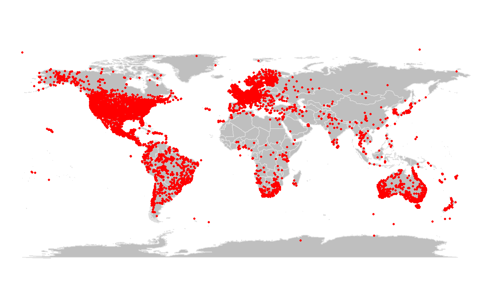
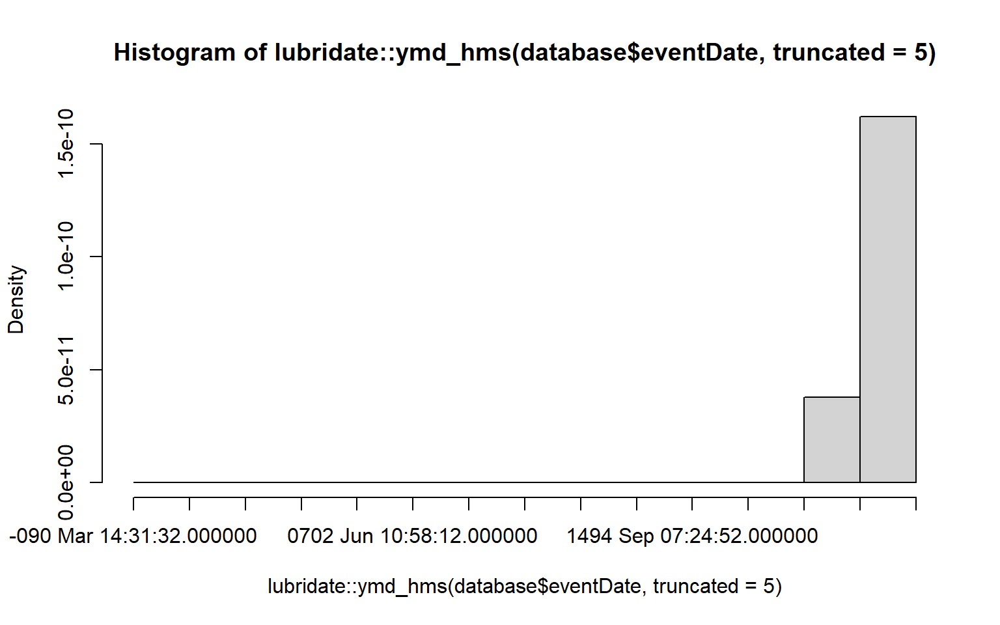
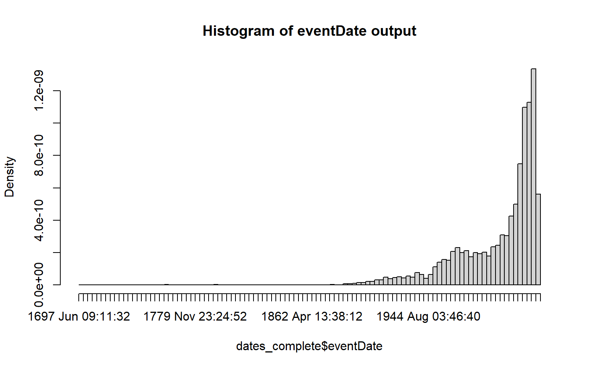
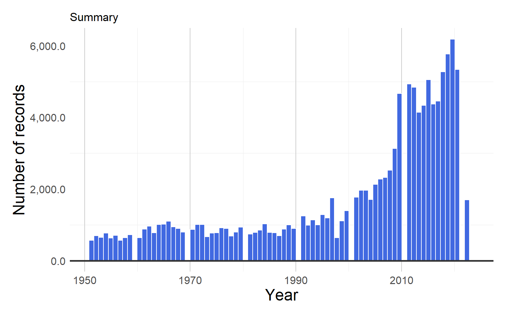
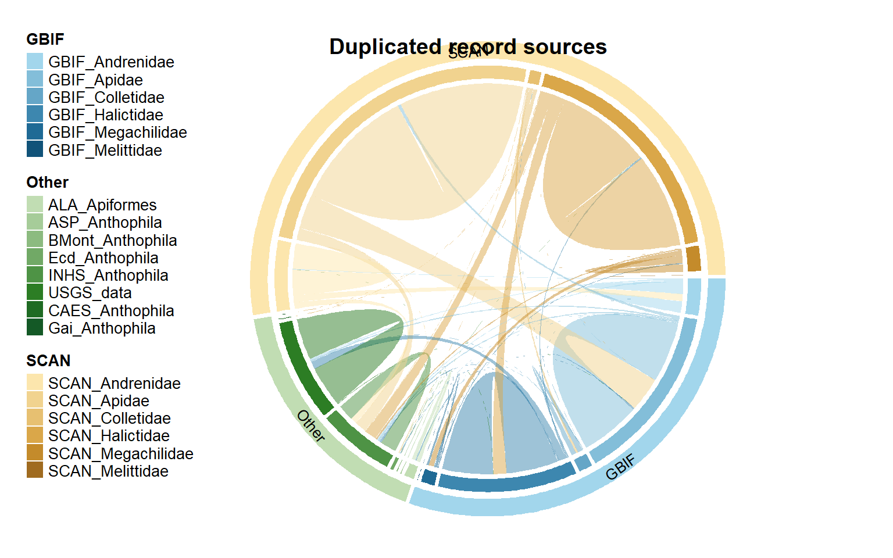

A globally-synthesized and flagged bee occurrence dataset and cleaning workflow
Attention:
This R script was written by James Dorey, starting on the 2nd of May
2022. The script intends to clean occurrence data from several sources
using a combination of custom functions and functions from the “bdc”
package. / For queries, please feel free to contact James Dorey at jbdorey@me.com
0.0 Script preparation
0.1 Working directory
Choose the path to the root folder in which all other folders can be found
Choose the location of your data
Choose the location of the R script
Choose the taxonomy path
Choose the path for the intermediate data storage
Set the working directory
0.2 Install packages (if needed)
Install only those packages that are not already present in your
system. You may need to install gdal on your computer. This can be done
on mac by using Homebrew in the terminal and the command “brew install
gdal”. Somethtimes renv does not capture all dependancies, and will be
unable to detect packages used in certain ways
E.g. for (package in c(“dplyr”, “ggplot2”)) {library(package,
character.only = TRUE)}
can use “renv::settings\(snapshot.type("all")" to capture all packages installed in library or "renv::settings\)snapshot.type(”explicit”)” and specify packages.
install.packages("renv")
renv::init()
list.of.packages <- c("R.utils", # To use gunzip
"magrittr", # to use pipes
"ggplot2", # Creates many easthetic plots
"ggVennDiagram", # Extends ggplot2 to make venn diagrams
"dplyr", # Part of the tidyverse
"tibble", # To use tibbles
"forcats", # tidyverse for working with factors
"tidyr", # Part of the tidyverse
"rlist", # Package to save lists
"galah", # To download ALA data
"praise", # To whispers sweet nothings
"EML", # To work with .eml files
"emld", # To work with .eml files
"rlang", # Part of the tidyverse — core functions
"xml2", # Part of the tidyverse — reads .xml files
"readr", # Part of the tidyverse — reads files (e.g., .csv)
"stringr", # Part of the tidyverse — works with text strings
"lubridate", # Part of the tidyverse — works with dates
"tidyselect", # Part of the tidyverse
"mgsub", # To perform multiple text substitutions
"bdc", # data cleaning package
"rvest", # Package for interfacing with and downloading from the internet
"rnaturalearth", # Global vector map data
"rnaturalearthdata", # To access the above global map data
"countrycode", # Package to deal with country codes
"rangeBuilder",
"rworldmap",
"rmarkdown",
"rmdformats",
"prettydoc",
"hexbin",
"readxl",
"cowplot", # ggplot2 helper package
"ggspatial",
"rmarkdown",
"rmdformats",
"htmltools",
"prettydoc") # Makes ggplot2 create north arrows or scale bars Install sf and terra seperately
renv::install(c("sf","terra"), type = "binary")
renv::install(c("sf","terra"), type = "binary")
#List the new (not installed) packages and then if there are any, install them.
renv::install(packages = c(list.of.packages, "ropensci/rnaturalearthhires", "mattflor/chorddiag"),
rebuild = FALSE) # try changing to TRUE if you're having package troubles
0.3 Load packages
Load all packages from the list specified above, with the addition of “rnaturalearthhires”
lapply(c(list.of.packages, "rnaturalearthhires", "chorddiag", "sf","terra"),
library, character.only = TRUE)## Linking to GEOS 3.11.2, GDAL 3.6.2, PROJ 9.2.0; sf_use_s2() is TRUE## terra 1.7.39##
## Attaching package: 'terra'## The following object is masked from 'package:tidyr':
##
## extract## The following objects are masked from 'package:R.utils':
##
## draw, extract, resample, unwrap, wrap## The following objects are masked from 'package:R.oo':
##
## extend, trim## The following object is masked from 'package:knitr':
##
## spin## The following objects are masked from 'package:magrittr':
##
## extract, inset## [[1]]
## [1] "htmltools" "ggspatial" "cowplot"
## [4] "readxl" "hexbin" "prettydoc"
## [7] "rmdformats" "rmarkdown" "rworldmap"
## [10] "sp" "rangeBuilder" "countrycode"
## [13] "rnaturalearthdata" "rnaturalearth" "rvest"
## [16] "bdc" "mgsub" "tidyselect"
## [19] "lubridate" "stringr" "readr"
## [22] "xml2" "rlang" "emld"
## [25] "EML" "praise" "galah"
## [28] "rlist" "tidyr" "forcats"
## [31] "tibble" "ggVennDiagram" "ggplot2"
## [34] "R.utils" "R.oo" "R.methodsS3"
## [37] "knitr" "magrittr" "dplyr"
## [40] "rgnparser" "stats" "graphics"
## [43] "grDevices" "utils" "datasets"
## [46] "methods" "base"
##
## [[2]]
## [1] "htmltools" "ggspatial" "cowplot"
## [4] "readxl" "hexbin" "prettydoc"
## [7] "rmdformats" "rmarkdown" "rworldmap"
## [10] "sp" "rangeBuilder" "countrycode"
## [13] "rnaturalearthdata" "rnaturalearth" "rvest"
## [16] "bdc" "mgsub" "tidyselect"
## [19] "lubridate" "stringr" "readr"
## [22] "xml2" "rlang" "emld"
## [25] "EML" "praise" "galah"
## [28] "rlist" "tidyr" "forcats"
## [31] "tibble" "ggVennDiagram" "ggplot2"
## [34] "R.utils" "R.oo" "R.methodsS3"
## [37] "knitr" "magrittr" "dplyr"
## [40] "rgnparser" "stats" "graphics"
## [43] "grDevices" "utils" "datasets"
## [46] "methods" "base"
##
## [[3]]
## [1] "htmltools" "ggspatial" "cowplot"
## [4] "readxl" "hexbin" "prettydoc"
## [7] "rmdformats" "rmarkdown" "rworldmap"
## [10] "sp" "rangeBuilder" "countrycode"
## [13] "rnaturalearthdata" "rnaturalearth" "rvest"
## [16] "bdc" "mgsub" "tidyselect"
## [19] "lubridate" "stringr" "readr"
## [22] "xml2" "rlang" "emld"
## [25] "EML" "praise" "galah"
## [28] "rlist" "tidyr" "forcats"
## [31] "tibble" "ggVennDiagram" "ggplot2"
## [34] "R.utils" "R.oo" "R.methodsS3"
## [37] "knitr" "magrittr" "dplyr"
## [40] "rgnparser" "stats" "graphics"
## [43] "grDevices" "utils" "datasets"
## [46] "methods" "base"
##
## [[4]]
## [1] "htmltools" "ggspatial" "cowplot"
## [4] "readxl" "hexbin" "prettydoc"
## [7] "rmdformats" "rmarkdown" "rworldmap"
## [10] "sp" "rangeBuilder" "countrycode"
## [13] "rnaturalearthdata" "rnaturalearth" "rvest"
## [16] "bdc" "mgsub" "tidyselect"
## [19] "lubridate" "stringr" "readr"
## [22] "xml2" "rlang" "emld"
## [25] "EML" "praise" "galah"
## [28] "rlist" "tidyr" "forcats"
## [31] "tibble" "ggVennDiagram" "ggplot2"
## [34] "R.utils" "R.oo" "R.methodsS3"
## [37] "knitr" "magrittr" "dplyr"
## [40] "rgnparser" "stats" "graphics"
## [43] "grDevices" "utils" "datasets"
## [46] "methods" "base"
##
## [[5]]
## [1] "htmltools" "ggspatial" "cowplot"
## [4] "readxl" "hexbin" "prettydoc"
## [7] "rmdformats" "rmarkdown" "rworldmap"
## [10] "sp" "rangeBuilder" "countrycode"
## [13] "rnaturalearthdata" "rnaturalearth" "rvest"
## [16] "bdc" "mgsub" "tidyselect"
## [19] "lubridate" "stringr" "readr"
## [22] "xml2" "rlang" "emld"
## [25] "EML" "praise" "galah"
## [28] "rlist" "tidyr" "forcats"
## [31] "tibble" "ggVennDiagram" "ggplot2"
## [34] "R.utils" "R.oo" "R.methodsS3"
## [37] "knitr" "magrittr" "dplyr"
## [40] "rgnparser" "stats" "graphics"
## [43] "grDevices" "utils" "datasets"
## [46] "methods" "base"
##
## [[6]]
## [1] "htmltools" "ggspatial" "cowplot"
## [4] "readxl" "hexbin" "prettydoc"
## [7] "rmdformats" "rmarkdown" "rworldmap"
## [10] "sp" "rangeBuilder" "countrycode"
## [13] "rnaturalearthdata" "rnaturalearth" "rvest"
## [16] "bdc" "mgsub" "tidyselect"
## [19] "lubridate" "stringr" "readr"
## [22] "xml2" "rlang" "emld"
## [25] "EML" "praise" "galah"
## [28] "rlist" "tidyr" "forcats"
## [31] "tibble" "ggVennDiagram" "ggplot2"
## [34] "R.utils" "R.oo" "R.methodsS3"
## [37] "knitr" "magrittr" "dplyr"
## [40] "rgnparser" "stats" "graphics"
## [43] "grDevices" "utils" "datasets"
## [46] "methods" "base"
##
## [[7]]
## [1] "htmltools" "ggspatial" "cowplot"
## [4] "readxl" "hexbin" "prettydoc"
## [7] "rmdformats" "rmarkdown" "rworldmap"
## [10] "sp" "rangeBuilder" "countrycode"
## [13] "rnaturalearthdata" "rnaturalearth" "rvest"
## [16] "bdc" "mgsub" "tidyselect"
## [19] "lubridate" "stringr" "readr"
## [22] "xml2" "rlang" "emld"
## [25] "EML" "praise" "galah"
## [28] "rlist" "tidyr" "forcats"
## [31] "tibble" "ggVennDiagram" "ggplot2"
## [34] "R.utils" "R.oo" "R.methodsS3"
## [37] "knitr" "magrittr" "dplyr"
## [40] "rgnparser" "stats" "graphics"
## [43] "grDevices" "utils" "datasets"
## [46] "methods" "base"
##
## [[8]]
## [1] "htmltools" "ggspatial" "cowplot"
## [4] "readxl" "hexbin" "prettydoc"
## [7] "rmdformats" "rmarkdown" "rworldmap"
## [10] "sp" "rangeBuilder" "countrycode"
## [13] "rnaturalearthdata" "rnaturalearth" "rvest"
## [16] "bdc" "mgsub" "tidyselect"
## [19] "lubridate" "stringr" "readr"
## [22] "xml2" "rlang" "emld"
## [25] "EML" "praise" "galah"
## [28] "rlist" "tidyr" "forcats"
## [31] "tibble" "ggVennDiagram" "ggplot2"
## [34] "R.utils" "R.oo" "R.methodsS3"
## [37] "knitr" "magrittr" "dplyr"
## [40] "rgnparser" "stats" "graphics"
## [43] "grDevices" "utils" "datasets"
## [46] "methods" "base"
##
## [[9]]
## [1] "htmltools" "ggspatial" "cowplot"
## [4] "readxl" "hexbin" "prettydoc"
## [7] "rmdformats" "rmarkdown" "rworldmap"
## [10] "sp" "rangeBuilder" "countrycode"
## [13] "rnaturalearthdata" "rnaturalearth" "rvest"
## [16] "bdc" "mgsub" "tidyselect"
## [19] "lubridate" "stringr" "readr"
## [22] "xml2" "rlang" "emld"
## [25] "EML" "praise" "galah"
## [28] "rlist" "tidyr" "forcats"
## [31] "tibble" "ggVennDiagram" "ggplot2"
## [34] "R.utils" "R.oo" "R.methodsS3"
## [37] "knitr" "magrittr" "dplyr"
## [40] "rgnparser" "stats" "graphics"
## [43] "grDevices" "utils" "datasets"
## [46] "methods" "base"
##
## [[10]]
## [1] "htmltools" "ggspatial" "cowplot"
## [4] "readxl" "hexbin" "prettydoc"
## [7] "rmdformats" "rmarkdown" "rworldmap"
## [10] "sp" "rangeBuilder" "countrycode"
## [13] "rnaturalearthdata" "rnaturalearth" "rvest"
## [16] "bdc" "mgsub" "tidyselect"
## [19] "lubridate" "stringr" "readr"
## [22] "xml2" "rlang" "emld"
## [25] "EML" "praise" "galah"
## [28] "rlist" "tidyr" "forcats"
## [31] "tibble" "ggVennDiagram" "ggplot2"
## [34] "R.utils" "R.oo" "R.methodsS3"
## [37] "knitr" "magrittr" "dplyr"
## [40] "rgnparser" "stats" "graphics"
## [43] "grDevices" "utils" "datasets"
## [46] "methods" "base"
##
## [[11]]
## [1] "htmltools" "ggspatial" "cowplot"
## [4] "readxl" "hexbin" "prettydoc"
## [7] "rmdformats" "rmarkdown" "rworldmap"
## [10] "sp" "rangeBuilder" "countrycode"
## [13] "rnaturalearthdata" "rnaturalearth" "rvest"
## [16] "bdc" "mgsub" "tidyselect"
## [19] "lubridate" "stringr" "readr"
## [22] "xml2" "rlang" "emld"
## [25] "EML" "praise" "galah"
## [28] "rlist" "tidyr" "forcats"
## [31] "tibble" "ggVennDiagram" "ggplot2"
## [34] "R.utils" "R.oo" "R.methodsS3"
## [37] "knitr" "magrittr" "dplyr"
## [40] "rgnparser" "stats" "graphics"
## [43] "grDevices" "utils" "datasets"
## [46] "methods" "base"
##
## [[12]]
## [1] "htmltools" "ggspatial" "cowplot"
## [4] "readxl" "hexbin" "prettydoc"
## [7] "rmdformats" "rmarkdown" "rworldmap"
## [10] "sp" "rangeBuilder" "countrycode"
## [13] "rnaturalearthdata" "rnaturalearth" "rvest"
## [16] "bdc" "mgsub" "tidyselect"
## [19] "lubridate" "stringr" "readr"
## [22] "xml2" "rlang" "emld"
## [25] "EML" "praise" "galah"
## [28] "rlist" "tidyr" "forcats"
## [31] "tibble" "ggVennDiagram" "ggplot2"
## [34] "R.utils" "R.oo" "R.methodsS3"
## [37] "knitr" "magrittr" "dplyr"
## [40] "rgnparser" "stats" "graphics"
## [43] "grDevices" "utils" "datasets"
## [46] "methods" "base"
##
## [[13]]
## [1] "htmltools" "ggspatial" "cowplot"
## [4] "readxl" "hexbin" "prettydoc"
## [7] "rmdformats" "rmarkdown" "rworldmap"
## [10] "sp" "rangeBuilder" "countrycode"
## [13] "rnaturalearthdata" "rnaturalearth" "rvest"
## [16] "bdc" "mgsub" "tidyselect"
## [19] "lubridate" "stringr" "readr"
## [22] "xml2" "rlang" "emld"
## [25] "EML" "praise" "galah"
## [28] "rlist" "tidyr" "forcats"
## [31] "tibble" "ggVennDiagram" "ggplot2"
## [34] "R.utils" "R.oo" "R.methodsS3"
## [37] "knitr" "magrittr" "dplyr"
## [40] "rgnparser" "stats" "graphics"
## [43] "grDevices" "utils" "datasets"
## [46] "methods" "base"
##
## [[14]]
## [1] "htmltools" "ggspatial" "cowplot"
## [4] "readxl" "hexbin" "prettydoc"
## [7] "rmdformats" "rmarkdown" "rworldmap"
## [10] "sp" "rangeBuilder" "countrycode"
## [13] "rnaturalearthdata" "rnaturalearth" "rvest"
## [16] "bdc" "mgsub" "tidyselect"
## [19] "lubridate" "stringr" "readr"
## [22] "xml2" "rlang" "emld"
## [25] "EML" "praise" "galah"
## [28] "rlist" "tidyr" "forcats"
## [31] "tibble" "ggVennDiagram" "ggplot2"
## [34] "R.utils" "R.oo" "R.methodsS3"
## [37] "knitr" "magrittr" "dplyr"
## [40] "rgnparser" "stats" "graphics"
## [43] "grDevices" "utils" "datasets"
## [46] "methods" "base"
##
## [[15]]
## [1] "htmltools" "ggspatial" "cowplot"
## [4] "readxl" "hexbin" "prettydoc"
## [7] "rmdformats" "rmarkdown" "rworldmap"
## [10] "sp" "rangeBuilder" "countrycode"
## [13] "rnaturalearthdata" "rnaturalearth" "rvest"
## [16] "bdc" "mgsub" "tidyselect"
## [19] "lubridate" "stringr" "readr"
## [22] "xml2" "rlang" "emld"
## [25] "EML" "praise" "galah"
## [28] "rlist" "tidyr" "forcats"
## [31] "tibble" "ggVennDiagram" "ggplot2"
## [34] "R.utils" "R.oo" "R.methodsS3"
## [37] "knitr" "magrittr" "dplyr"
## [40] "rgnparser" "stats" "graphics"
## [43] "grDevices" "utils" "datasets"
## [46] "methods" "base"
##
## [[16]]
## [1] "htmltools" "ggspatial" "cowplot"
## [4] "readxl" "hexbin" "prettydoc"
## [7] "rmdformats" "rmarkdown" "rworldmap"
## [10] "sp" "rangeBuilder" "countrycode"
## [13] "rnaturalearthdata" "rnaturalearth" "rvest"
## [16] "bdc" "mgsub" "tidyselect"
## [19] "lubridate" "stringr" "readr"
## [22] "xml2" "rlang" "emld"
## [25] "EML" "praise" "galah"
## [28] "rlist" "tidyr" "forcats"
## [31] "tibble" "ggVennDiagram" "ggplot2"
## [34] "R.utils" "R.oo" "R.methodsS3"
## [37] "knitr" "magrittr" "dplyr"
## [40] "rgnparser" "stats" "graphics"
## [43] "grDevices" "utils" "datasets"
## [46] "methods" "base"
##
## [[17]]
## [1] "htmltools" "ggspatial" "cowplot"
## [4] "readxl" "hexbin" "prettydoc"
## [7] "rmdformats" "rmarkdown" "rworldmap"
## [10] "sp" "rangeBuilder" "countrycode"
## [13] "rnaturalearthdata" "rnaturalearth" "rvest"
## [16] "bdc" "mgsub" "tidyselect"
## [19] "lubridate" "stringr" "readr"
## [22] "xml2" "rlang" "emld"
## [25] "EML" "praise" "galah"
## [28] "rlist" "tidyr" "forcats"
## [31] "tibble" "ggVennDiagram" "ggplot2"
## [34] "R.utils" "R.oo" "R.methodsS3"
## [37] "knitr" "magrittr" "dplyr"
## [40] "rgnparser" "stats" "graphics"
## [43] "grDevices" "utils" "datasets"
## [46] "methods" "base"
##
## [[18]]
## [1] "htmltools" "ggspatial" "cowplot"
## [4] "readxl" "hexbin" "prettydoc"
## [7] "rmdformats" "rmarkdown" "rworldmap"
## [10] "sp" "rangeBuilder" "countrycode"
## [13] "rnaturalearthdata" "rnaturalearth" "rvest"
## [16] "bdc" "mgsub" "tidyselect"
## [19] "lubridate" "stringr" "readr"
## [22] "xml2" "rlang" "emld"
## [25] "EML" "praise" "galah"
## [28] "rlist" "tidyr" "forcats"
## [31] "tibble" "ggVennDiagram" "ggplot2"
## [34] "R.utils" "R.oo" "R.methodsS3"
## [37] "knitr" "magrittr" "dplyr"
## [40] "rgnparser" "stats" "graphics"
## [43] "grDevices" "utils" "datasets"
## [46] "methods" "base"
##
## [[19]]
## [1] "htmltools" "ggspatial" "cowplot"
## [4] "readxl" "hexbin" "prettydoc"
## [7] "rmdformats" "rmarkdown" "rworldmap"
## [10] "sp" "rangeBuilder" "countrycode"
## [13] "rnaturalearthdata" "rnaturalearth" "rvest"
## [16] "bdc" "mgsub" "tidyselect"
## [19] "lubridate" "stringr" "readr"
## [22] "xml2" "rlang" "emld"
## [25] "EML" "praise" "galah"
## [28] "rlist" "tidyr" "forcats"
## [31] "tibble" "ggVennDiagram" "ggplot2"
## [34] "R.utils" "R.oo" "R.methodsS3"
## [37] "knitr" "magrittr" "dplyr"
## [40] "rgnparser" "stats" "graphics"
## [43] "grDevices" "utils" "datasets"
## [46] "methods" "base"
##
## [[20]]
## [1] "htmltools" "ggspatial" "cowplot"
## [4] "readxl" "hexbin" "prettydoc"
## [7] "rmdformats" "rmarkdown" "rworldmap"
## [10] "sp" "rangeBuilder" "countrycode"
## [13] "rnaturalearthdata" "rnaturalearth" "rvest"
## [16] "bdc" "mgsub" "tidyselect"
## [19] "lubridate" "stringr" "readr"
## [22] "xml2" "rlang" "emld"
## [25] "EML" "praise" "galah"
## [28] "rlist" "tidyr" "forcats"
## [31] "tibble" "ggVennDiagram" "ggplot2"
## [34] "R.utils" "R.oo" "R.methodsS3"
## [37] "knitr" "magrittr" "dplyr"
## [40] "rgnparser" "stats" "graphics"
## [43] "grDevices" "utils" "datasets"
## [46] "methods" "base"
##
## [[21]]
## [1] "htmltools" "ggspatial" "cowplot"
## [4] "readxl" "hexbin" "prettydoc"
## [7] "rmdformats" "rmarkdown" "rworldmap"
## [10] "sp" "rangeBuilder" "countrycode"
## [13] "rnaturalearthdata" "rnaturalearth" "rvest"
## [16] "bdc" "mgsub" "tidyselect"
## [19] "lubridate" "stringr" "readr"
## [22] "xml2" "rlang" "emld"
## [25] "EML" "praise" "galah"
## [28] "rlist" "tidyr" "forcats"
## [31] "tibble" "ggVennDiagram" "ggplot2"
## [34] "R.utils" "R.oo" "R.methodsS3"
## [37] "knitr" "magrittr" "dplyr"
## [40] "rgnparser" "stats" "graphics"
## [43] "grDevices" "utils" "datasets"
## [46] "methods" "base"
##
## [[22]]
## [1] "htmltools" "ggspatial" "cowplot"
## [4] "readxl" "hexbin" "prettydoc"
## [7] "rmdformats" "rmarkdown" "rworldmap"
## [10] "sp" "rangeBuilder" "countrycode"
## [13] "rnaturalearthdata" "rnaturalearth" "rvest"
## [16] "bdc" "mgsub" "tidyselect"
## [19] "lubridate" "stringr" "readr"
## [22] "xml2" "rlang" "emld"
## [25] "EML" "praise" "galah"
## [28] "rlist" "tidyr" "forcats"
## [31] "tibble" "ggVennDiagram" "ggplot2"
## [34] "R.utils" "R.oo" "R.methodsS3"
## [37] "knitr" "magrittr" "dplyr"
## [40] "rgnparser" "stats" "graphics"
## [43] "grDevices" "utils" "datasets"
## [46] "methods" "base"
##
## [[23]]
## [1] "htmltools" "ggspatial" "cowplot"
## [4] "readxl" "hexbin" "prettydoc"
## [7] "rmdformats" "rmarkdown" "rworldmap"
## [10] "sp" "rangeBuilder" "countrycode"
## [13] "rnaturalearthdata" "rnaturalearth" "rvest"
## [16] "bdc" "mgsub" "tidyselect"
## [19] "lubridate" "stringr" "readr"
## [22] "xml2" "rlang" "emld"
## [25] "EML" "praise" "galah"
## [28] "rlist" "tidyr" "forcats"
## [31] "tibble" "ggVennDiagram" "ggplot2"
## [34] "R.utils" "R.oo" "R.methodsS3"
## [37] "knitr" "magrittr" "dplyr"
## [40] "rgnparser" "stats" "graphics"
## [43] "grDevices" "utils" "datasets"
## [46] "methods" "base"
##
## [[24]]
## [1] "htmltools" "ggspatial" "cowplot"
## [4] "readxl" "hexbin" "prettydoc"
## [7] "rmdformats" "rmarkdown" "rworldmap"
## [10] "sp" "rangeBuilder" "countrycode"
## [13] "rnaturalearthdata" "rnaturalearth" "rvest"
## [16] "bdc" "mgsub" "tidyselect"
## [19] "lubridate" "stringr" "readr"
## [22] "xml2" "rlang" "emld"
## [25] "EML" "praise" "galah"
## [28] "rlist" "tidyr" "forcats"
## [31] "tibble" "ggVennDiagram" "ggplot2"
## [34] "R.utils" "R.oo" "R.methodsS3"
## [37] "knitr" "magrittr" "dplyr"
## [40] "rgnparser" "stats" "graphics"
## [43] "grDevices" "utils" "datasets"
## [46] "methods" "base"
##
## [[25]]
## [1] "htmltools" "ggspatial" "cowplot"
## [4] "readxl" "hexbin" "prettydoc"
## [7] "rmdformats" "rmarkdown" "rworldmap"
## [10] "sp" "rangeBuilder" "countrycode"
## [13] "rnaturalearthdata" "rnaturalearth" "rvest"
## [16] "bdc" "mgsub" "tidyselect"
## [19] "lubridate" "stringr" "readr"
## [22] "xml2" "rlang" "emld"
## [25] "EML" "praise" "galah"
## [28] "rlist" "tidyr" "forcats"
## [31] "tibble" "ggVennDiagram" "ggplot2"
## [34] "R.utils" "R.oo" "R.methodsS3"
## [37] "knitr" "magrittr" "dplyr"
## [40] "rgnparser" "stats" "graphics"
## [43] "grDevices" "utils" "datasets"
## [46] "methods" "base"
##
## [[26]]
## [1] "htmltools" "ggspatial" "cowplot"
## [4] "readxl" "hexbin" "prettydoc"
## [7] "rmdformats" "rmarkdown" "rworldmap"
## [10] "sp" "rangeBuilder" "countrycode"
## [13] "rnaturalearthdata" "rnaturalearth" "rvest"
## [16] "bdc" "mgsub" "tidyselect"
## [19] "lubridate" "stringr" "readr"
## [22] "xml2" "rlang" "emld"
## [25] "EML" "praise" "galah"
## [28] "rlist" "tidyr" "forcats"
## [31] "tibble" "ggVennDiagram" "ggplot2"
## [34] "R.utils" "R.oo" "R.methodsS3"
## [37] "knitr" "magrittr" "dplyr"
## [40] "rgnparser" "stats" "graphics"
## [43] "grDevices" "utils" "datasets"
## [46] "methods" "base"
##
## [[27]]
## [1] "htmltools" "ggspatial" "cowplot"
## [4] "readxl" "hexbin" "prettydoc"
## [7] "rmdformats" "rmarkdown" "rworldmap"
## [10] "sp" "rangeBuilder" "countrycode"
## [13] "rnaturalearthdata" "rnaturalearth" "rvest"
## [16] "bdc" "mgsub" "tidyselect"
## [19] "lubridate" "stringr" "readr"
## [22] "xml2" "rlang" "emld"
## [25] "EML" "praise" "galah"
## [28] "rlist" "tidyr" "forcats"
## [31] "tibble" "ggVennDiagram" "ggplot2"
## [34] "R.utils" "R.oo" "R.methodsS3"
## [37] "knitr" "magrittr" "dplyr"
## [40] "rgnparser" "stats" "graphics"
## [43] "grDevices" "utils" "datasets"
## [46] "methods" "base"
##
## [[28]]
## [1] "htmltools" "ggspatial" "cowplot"
## [4] "readxl" "hexbin" "prettydoc"
## [7] "rmdformats" "rmarkdown" "rworldmap"
## [10] "sp" "rangeBuilder" "countrycode"
## [13] "rnaturalearthdata" "rnaturalearth" "rvest"
## [16] "bdc" "mgsub" "tidyselect"
## [19] "lubridate" "stringr" "readr"
## [22] "xml2" "rlang" "emld"
## [25] "EML" "praise" "galah"
## [28] "rlist" "tidyr" "forcats"
## [31] "tibble" "ggVennDiagram" "ggplot2"
## [34] "R.utils" "R.oo" "R.methodsS3"
## [37] "knitr" "magrittr" "dplyr"
## [40] "rgnparser" "stats" "graphics"
## [43] "grDevices" "utils" "datasets"
## [46] "methods" "base"
##
## [[29]]
## [1] "htmltools" "ggspatial" "cowplot"
## [4] "readxl" "hexbin" "prettydoc"
## [7] "rmdformats" "rmarkdown" "rworldmap"
## [10] "sp" "rangeBuilder" "countrycode"
## [13] "rnaturalearthdata" "rnaturalearth" "rvest"
## [16] "bdc" "mgsub" "tidyselect"
## [19] "lubridate" "stringr" "readr"
## [22] "xml2" "rlang" "emld"
## [25] "EML" "praise" "galah"
## [28] "rlist" "tidyr" "forcats"
## [31] "tibble" "ggVennDiagram" "ggplot2"
## [34] "R.utils" "R.oo" "R.methodsS3"
## [37] "knitr" "magrittr" "dplyr"
## [40] "rgnparser" "stats" "graphics"
## [43] "grDevices" "utils" "datasets"
## [46] "methods" "base"
##
## [[30]]
## [1] "htmltools" "ggspatial" "cowplot"
## [4] "readxl" "hexbin" "prettydoc"
## [7] "rmdformats" "rmarkdown" "rworldmap"
## [10] "sp" "rangeBuilder" "countrycode"
## [13] "rnaturalearthdata" "rnaturalearth" "rvest"
## [16] "bdc" "mgsub" "tidyselect"
## [19] "lubridate" "stringr" "readr"
## [22] "xml2" "rlang" "emld"
## [25] "EML" "praise" "galah"
## [28] "rlist" "tidyr" "forcats"
## [31] "tibble" "ggVennDiagram" "ggplot2"
## [34] "R.utils" "R.oo" "R.methodsS3"
## [37] "knitr" "magrittr" "dplyr"
## [40] "rgnparser" "stats" "graphics"
## [43] "grDevices" "utils" "datasets"
## [46] "methods" "base"
##
## [[31]]
## [1] "htmltools" "ggspatial" "cowplot"
## [4] "readxl" "hexbin" "prettydoc"
## [7] "rmdformats" "rmarkdown" "rworldmap"
## [10] "sp" "rangeBuilder" "countrycode"
## [13] "rnaturalearthdata" "rnaturalearth" "rvest"
## [16] "bdc" "mgsub" "tidyselect"
## [19] "lubridate" "stringr" "readr"
## [22] "xml2" "rlang" "emld"
## [25] "EML" "praise" "galah"
## [28] "rlist" "tidyr" "forcats"
## [31] "tibble" "ggVennDiagram" "ggplot2"
## [34] "R.utils" "R.oo" "R.methodsS3"
## [37] "knitr" "magrittr" "dplyr"
## [40] "rgnparser" "stats" "graphics"
## [43] "grDevices" "utils" "datasets"
## [46] "methods" "base"
##
## [[32]]
## [1] "htmltools" "ggspatial" "cowplot"
## [4] "readxl" "hexbin" "prettydoc"
## [7] "rmdformats" "rmarkdown" "rworldmap"
## [10] "sp" "rangeBuilder" "countrycode"
## [13] "rnaturalearthdata" "rnaturalearth" "rvest"
## [16] "bdc" "mgsub" "tidyselect"
## [19] "lubridate" "stringr" "readr"
## [22] "xml2" "rlang" "emld"
## [25] "EML" "praise" "galah"
## [28] "rlist" "tidyr" "forcats"
## [31] "tibble" "ggVennDiagram" "ggplot2"
## [34] "R.utils" "R.oo" "R.methodsS3"
## [37] "knitr" "magrittr" "dplyr"
## [40] "rgnparser" "stats" "graphics"
## [43] "grDevices" "utils" "datasets"
## [46] "methods" "base"
##
## [[33]]
## [1] "htmltools" "ggspatial" "cowplot"
## [4] "readxl" "hexbin" "prettydoc"
## [7] "rmdformats" "rmarkdown" "rworldmap"
## [10] "sp" "rangeBuilder" "countrycode"
## [13] "rnaturalearthdata" "rnaturalearth" "rvest"
## [16] "bdc" "mgsub" "tidyselect"
## [19] "lubridate" "stringr" "readr"
## [22] "xml2" "rlang" "emld"
## [25] "EML" "praise" "galah"
## [28] "rlist" "tidyr" "forcats"
## [31] "tibble" "ggVennDiagram" "ggplot2"
## [34] "R.utils" "R.oo" "R.methodsS3"
## [37] "knitr" "magrittr" "dplyr"
## [40] "rgnparser" "stats" "graphics"
## [43] "grDevices" "utils" "datasets"
## [46] "methods" "base"
##
## [[34]]
## [1] "htmltools" "ggspatial" "cowplot"
## [4] "readxl" "hexbin" "prettydoc"
## [7] "rmdformats" "rmarkdown" "rworldmap"
## [10] "sp" "rangeBuilder" "countrycode"
## [13] "rnaturalearthdata" "rnaturalearth" "rvest"
## [16] "bdc" "mgsub" "tidyselect"
## [19] "lubridate" "stringr" "readr"
## [22] "xml2" "rlang" "emld"
## [25] "EML" "praise" "galah"
## [28] "rlist" "tidyr" "forcats"
## [31] "tibble" "ggVennDiagram" "ggplot2"
## [34] "R.utils" "R.oo" "R.methodsS3"
## [37] "knitr" "magrittr" "dplyr"
## [40] "rgnparser" "stats" "graphics"
## [43] "grDevices" "utils" "datasets"
## [46] "methods" "base"
##
## [[35]]
## [1] "htmltools" "ggspatial" "cowplot"
## [4] "readxl" "hexbin" "prettydoc"
## [7] "rmdformats" "rmarkdown" "rworldmap"
## [10] "sp" "rangeBuilder" "countrycode"
## [13] "rnaturalearthdata" "rnaturalearth" "rvest"
## [16] "bdc" "mgsub" "tidyselect"
## [19] "lubridate" "stringr" "readr"
## [22] "xml2" "rlang" "emld"
## [25] "EML" "praise" "galah"
## [28] "rlist" "tidyr" "forcats"
## [31] "tibble" "ggVennDiagram" "ggplot2"
## [34] "R.utils" "R.oo" "R.methodsS3"
## [37] "knitr" "magrittr" "dplyr"
## [40] "rgnparser" "stats" "graphics"
## [43] "grDevices" "utils" "datasets"
## [46] "methods" "base"
##
## [[36]]
## [1] "htmltools" "ggspatial" "cowplot"
## [4] "readxl" "hexbin" "prettydoc"
## [7] "rmdformats" "rmarkdown" "rworldmap"
## [10] "sp" "rangeBuilder" "countrycode"
## [13] "rnaturalearthdata" "rnaturalearth" "rvest"
## [16] "bdc" "mgsub" "tidyselect"
## [19] "lubridate" "stringr" "readr"
## [22] "xml2" "rlang" "emld"
## [25] "EML" "praise" "galah"
## [28] "rlist" "tidyr" "forcats"
## [31] "tibble" "ggVennDiagram" "ggplot2"
## [34] "R.utils" "R.oo" "R.methodsS3"
## [37] "knitr" "magrittr" "dplyr"
## [40] "rgnparser" "stats" "graphics"
## [43] "grDevices" "utils" "datasets"
## [46] "methods" "base"
##
## [[37]]
## [1] "htmltools" "ggspatial" "cowplot"
## [4] "readxl" "hexbin" "prettydoc"
## [7] "rmdformats" "rmarkdown" "rworldmap"
## [10] "sp" "rangeBuilder" "countrycode"
## [13] "rnaturalearthdata" "rnaturalearth" "rvest"
## [16] "bdc" "mgsub" "tidyselect"
## [19] "lubridate" "stringr" "readr"
## [22] "xml2" "rlang" "emld"
## [25] "EML" "praise" "galah"
## [28] "rlist" "tidyr" "forcats"
## [31] "tibble" "ggVennDiagram" "ggplot2"
## [34] "R.utils" "R.oo" "R.methodsS3"
## [37] "knitr" "magrittr" "dplyr"
## [40] "rgnparser" "stats" "graphics"
## [43] "grDevices" "utils" "datasets"
## [46] "methods" "base"
##
## [[38]]
## [1] "htmltools" "ggspatial" "cowplot"
## [4] "readxl" "hexbin" "prettydoc"
## [7] "rmdformats" "rmarkdown" "rworldmap"
## [10] "sp" "rangeBuilder" "countrycode"
## [13] "rnaturalearthdata" "rnaturalearth" "rvest"
## [16] "bdc" "mgsub" "tidyselect"
## [19] "lubridate" "stringr" "readr"
## [22] "xml2" "rlang" "emld"
## [25] "EML" "praise" "galah"
## [28] "rlist" "tidyr" "forcats"
## [31] "tibble" "ggVennDiagram" "ggplot2"
## [34] "R.utils" "R.oo" "R.methodsS3"
## [37] "knitr" "magrittr" "dplyr"
## [40] "rgnparser" "stats" "graphics"
## [43] "grDevices" "utils" "datasets"
## [46] "methods" "base"
##
## [[39]]
## [1] "rnaturalearthhires" "htmltools" "ggspatial"
## [4] "cowplot" "readxl" "hexbin"
## [7] "prettydoc" "rmdformats" "rmarkdown"
## [10] "rworldmap" "sp" "rangeBuilder"
## [13] "countrycode" "rnaturalearthdata" "rnaturalearth"
## [16] "rvest" "bdc" "mgsub"
## [19] "tidyselect" "lubridate" "stringr"
## [22] "readr" "xml2" "rlang"
## [25] "emld" "EML" "praise"
## [28] "galah" "rlist" "tidyr"
## [31] "forcats" "tibble" "ggVennDiagram"
## [34] "ggplot2" "R.utils" "R.oo"
## [37] "R.methodsS3" "knitr" "magrittr"
## [40] "dplyr" "rgnparser" "stats"
## [43] "graphics" "grDevices" "utils"
## [46] "datasets" "methods" "base"
##
## [[40]]
## [1] "chorddiag" "rnaturalearthhires" "htmltools"
## [4] "ggspatial" "cowplot" "readxl"
## [7] "hexbin" "prettydoc" "rmdformats"
## [10] "rmarkdown" "rworldmap" "sp"
## [13] "rangeBuilder" "countrycode" "rnaturalearthdata"
## [16] "rnaturalearth" "rvest" "bdc"
## [19] "mgsub" "tidyselect" "lubridate"
## [22] "stringr" "readr" "xml2"
## [25] "rlang" "emld" "EML"
## [28] "praise" "galah" "rlist"
## [31] "tidyr" "forcats" "tibble"
## [34] "ggVennDiagram" "ggplot2" "R.utils"
## [37] "R.oo" "R.methodsS3" "knitr"
## [40] "magrittr" "dplyr" "rgnparser"
## [43] "stats" "graphics" "grDevices"
## [46] "utils" "datasets" "methods"
## [49] "base"
##
## [[41]]
## [1] "sf" "chorddiag" "rnaturalearthhires"
## [4] "htmltools" "ggspatial" "cowplot"
## [7] "readxl" "hexbin" "prettydoc"
## [10] "rmdformats" "rmarkdown" "rworldmap"
## [13] "sp" "rangeBuilder" "countrycode"
## [16] "rnaturalearthdata" "rnaturalearth" "rvest"
## [19] "bdc" "mgsub" "tidyselect"
## [22] "lubridate" "stringr" "readr"
## [25] "xml2" "rlang" "emld"
## [28] "EML" "praise" "galah"
## [31] "rlist" "tidyr" "forcats"
## [34] "tibble" "ggVennDiagram" "ggplot2"
## [37] "R.utils" "R.oo" "R.methodsS3"
## [40] "knitr" "magrittr" "dplyr"
## [43] "rgnparser" "stats" "graphics"
## [46] "grDevices" "utils" "datasets"
## [49] "methods" "base"
##
## [[42]]
## [1] "terra" "sf" "chorddiag"
## [4] "rnaturalearthhires" "htmltools" "ggspatial"
## [7] "cowplot" "readxl" "hexbin"
## [10] "prettydoc" "rmdformats" "rmarkdown"
## [13] "rworldmap" "sp" "rangeBuilder"
## [16] "countrycode" "rnaturalearthdata" "rnaturalearth"
## [19] "rvest" "bdc" "mgsub"
## [22] "tidyselect" "lubridate" "stringr"
## [25] "readr" "xml2" "rlang"
## [28] "emld" "EML" "praise"
## [31] "galah" "rlist" "tidyr"
## [34] "forcats" "tibble" "ggVennDiagram"
## [37] "ggplot2" "R.utils" "R.oo"
## [40] "R.methodsS3" "knitr" "magrittr"
## [43] "dplyr" "rgnparser" "stats"
## [46] "graphics" "grDevices" "utils"
## [49] "datasets" "methods" "base"Load in R scripts and character strings in our package
sapply(list.files(file.path(ScriptPath), pattern = ".R$", full.names = TRUE), source) # loads in all functions## E:/BeeDataCleaning2022/BeeDataCleaning/BeeDataCleaning/R_scripting/BeeCleaning_SciData/R_functions/addFlagInfo.R
## value ?
## visible FALSE
## E:/BeeDataCleaning2022/BeeDataCleaning/BeeDataCleaning/R_scripting/BeeCleaning_SciData/R_functions/additionalData_readRs.R
## value ?
## visible FALSE
## E:/BeeDataCleaning2022/BeeDataCleaning/BeeDataCleaning/R_scripting/BeeCleaning_SciData/R_functions/addMetaAttributes.R
## value ?
## visible FALSE
## E:/BeeDataCleaning2022/BeeDataCleaning/BeeDataCleaning/R_scripting/BeeCleaning_SciData/R_functions/ALA_downloader.R
## value ?
## visible FALSE
## E:/BeeDataCleaning2022/BeeDataCleaning/BeeDataCleaning/R_scripting/BeeCleaning_SciData/R_functions/attr_builder.R
## value ?
## visible FALSE
## E:/BeeDataCleaning2022/BeeDataCleaning/BeeDataCleaning/R_scripting/BeeCleaning_SciData/R_functions/aux_functions.R
## value ?
## visible FALSE
## E:/BeeDataCleaning2022/BeeDataCleaning/BeeDataCleaning/R_scripting/BeeCleaning_SciData/R_functions/bdc_coord_trans.R
## value ?
## visible FALSE
## E:/BeeDataCleaning2022/BeeDataCleaning/BeeDataCleaning/R_scripting/BeeCleaning_SciData/R_functions/bdc_correct_coordinates.R
## value ?
## visible FALSE
## E:/BeeDataCleaning2022/BeeDataCleaning/BeeDataCleaning/R_scripting/BeeCleaning_SciData/R_functions/bdc_create_dir.R
## value ?
## visible FALSE
## E:/BeeDataCleaning2022/BeeDataCleaning/BeeDataCleaning/R_scripting/BeeCleaning_SciData/R_functions/bdc_get_world_map.R
## value ?
## visible FALSE
## E:/BeeDataCleaning2022/BeeDataCleaning/BeeDataCleaning/R_scripting/BeeCleaning_SciData/R_functions/chordDiagramR.R
## value ?
## visible FALSE
## E:/BeeDataCleaning2022/BeeDataCleaning/BeeDataCleaning/R_scripting/BeeCleaning_SciData/R_functions/ColTypeR.R
## value ?
## visible FALSE
## E:/BeeDataCleaning2022/BeeDataCleaning/BeeDataCleaning/R_scripting/BeeCleaning_SciData/R_functions/coordUncerFlagR.R
## value ?
## visible FALSE
## E:/BeeDataCleaning2022/BeeDataCleaning/BeeDataCleaning/R_scripting/BeeCleaning_SciData/R_functions/countryOutliers.R
## value ?
## visible FALSE
## E:/BeeDataCleaning2022/BeeDataCleaning/BeeDataCleaning/R_scripting/BeeCleaning_SciData/R_functions/data_finder.R
## value ?
## visible FALSE
## E:/BeeDataCleaning2022/BeeDataCleaning/BeeDataCleaning/R_scripting/BeeCleaning_SciData/R_functions/data_reader.R
## value ?
## visible FALSE
## E:/BeeDataCleaning2022/BeeDataCleaning/BeeDataCleaning/R_scripting/BeeCleaning_SciData/R_functions/dateFindR.R
## value ?
## visible FALSE
## E:/BeeDataCleaning2022/BeeDataCleaning/BeeDataCleaning/R_scripting/BeeCleaning_SciData/R_functions/dirMaker.R
## value ?
## visible FALSE
## E:/BeeDataCleaning2022/BeeDataCleaning/BeeDataCleaning/R_scripting/BeeCleaning_SciData/R_functions/dupePlotR.R
## value ?
## visible FALSE
## E:/BeeDataCleaning2022/BeeDataCleaning/BeeDataCleaning/R_scripting/BeeCleaning_SciData/R_functions/flag_converter.R
## value ?
## visible FALSE
## E:/BeeDataCleaning2022/BeeDataCleaning/BeeDataCleaning/R_scripting/BeeCleaning_SciData/R_functions/flagChartR.R
## value ?
## visible FALSE
## E:/BeeDataCleaning2022/BeeDataCleaning/BeeDataCleaning/R_scripting/BeeCleaning_SciData/R_functions/FlagManager.R
## value ?
## visible FALSE
## E:/BeeDataCleaning2022/BeeDataCleaning/BeeDataCleaning/R_scripting/BeeCleaning_SciData/R_functions/flagRecorder.R
## value ?
## visible FALSE
## E:/BeeDataCleaning2022/BeeDataCleaning/BeeDataCleaning/R_scripting/BeeCleaning_SciData/R_functions/formatted_combiner.R
## value ?
## visible FALSE
## E:/BeeDataCleaning2022/BeeDataCleaning/BeeDataCleaning/R_scripting/BeeCleaning_SciData/R_functions/HarmoniseR.R
## value ?
## visible FALSE
## E:/BeeDataCleaning2022/BeeDataCleaning/BeeDataCleaning/R_scripting/BeeCleaning_SciData/R_functions/Harmonize_chunkR.R
## value ?
## visible FALSE
## E:/BeeDataCleaning2022/BeeDataCleaning/BeeDataCleaning/R_scripting/BeeCleaning_SciData/R_functions/HigherNamer.R
## value ?
## visible FALSE
## E:/BeeDataCleaning2022/BeeDataCleaning/BeeDataCleaning/R_scripting/BeeCleaning_SciData/R_functions/idMatchR.R
## value ?
## visible FALSE
## E:/BeeDataCleaning2022/BeeDataCleaning/BeeDataCleaning/R_scripting/BeeCleaning_SciData/R_functions/importOccurrences.R
## value ?
## visible FALSE
## E:/BeeDataCleaning2022/BeeDataCleaning/BeeDataCleaning/R_scripting/BeeCleaning_SciData/R_functions/install_gnparser.R
## value ?
## visible FALSE
## E:/BeeDataCleaning2022/BeeDataCleaning/BeeDataCleaning/R_scripting/BeeCleaning_SciData/R_functions/jbd_CCInconsistent_chunker.R
## value ?
## visible FALSE
## E:/BeeDataCleaning2022/BeeDataCleaning/BeeDataCleaning/R_scripting/BeeCleaning_SciData/R_functions/jbd_CfC_chunker.R
## value ?
## visible FALSE
## E:/BeeDataCleaning2022/BeeDataCleaning/BeeDataCleaning/R_scripting/BeeCleaning_SciData/R_functions/jbd_coordCountryInconsistent.R
## value ?
## visible FALSE
## E:/BeeDataCleaning2022/BeeDataCleaning/BeeDataCleaning/R_scripting/BeeCleaning_SciData/R_functions/jbd_coordinates_transposed.R
## value ?
## visible FALSE
## E:/BeeDataCleaning2022/BeeDataCleaning/BeeDataCleaning/R_scripting/BeeCleaning_SciData/R_functions/jbd_country_from_coordinates.R
## value ?
## visible FALSE
## E:/BeeDataCleaning2022/BeeDataCleaning/BeeDataCleaning/R_scripting/BeeCleaning_SciData/R_functions/jbd_countryNameCleanR.R
## value ?
## visible FALSE
## E:/BeeDataCleaning2022/BeeDataCleaning/BeeDataCleaning/R_scripting/BeeCleaning_SciData/R_functions/jbd_create_figures.R
## value ?
## visible FALSE
## E:/BeeDataCleaning2022/BeeDataCleaning/BeeDataCleaning/R_scripting/BeeCleaning_SciData/R_functions/jbd_Ctrans_chunker.R
## value ?
## visible FALSE
## E:/BeeDataCleaning2022/BeeDataCleaning/BeeDataCleaning/R_scripting/BeeCleaning_SciData/R_functions/jbd_diagonAlley.R
## value ?
## visible FALSE
## E:/BeeDataCleaning2022/BeeDataCleaning/BeeDataCleaning/R_scripting/BeeCleaning_SciData/R_functions/jbd_dupeSummary.R
## value ?
## visible FALSE
## E:/BeeDataCleaning2022/BeeDataCleaning/BeeDataCleaning/R_scripting/BeeCleaning_SciData/R_functions/jbd_flagAbsent.R
## value ?
## visible FALSE
## E:/BeeDataCleaning2022/BeeDataCleaning/BeeDataCleaning/R_scripting/BeeCleaning_SciData/R_functions/jbd_flagLicense.R
## value ?
## visible FALSE
## E:/BeeDataCleaning2022/BeeDataCleaning/BeeDataCleaning/R_scripting/BeeCleaning_SciData/R_functions/jbd_GBIFissues.R
## value ?
## visible FALSE
## E:/BeeDataCleaning2022/BeeDataCleaning/BeeDataCleaning/R_scripting/BeeCleaning_SciData/R_functions/manualCorrectR.R
## value ?
## visible FALSE
## E:/BeeDataCleaning2022/BeeDataCleaning/BeeDataCleaning/R_scripting/BeeCleaning_SciData/R_functions/nameSplitR.R
## value ?
## visible FALSE
## E:/BeeDataCleaning2022/BeeDataCleaning/BeeDataCleaning/R_scripting/BeeCleaning_SciData/R_functions/occurrenceFlags.R
## value ?
## visible FALSE
## E:/BeeDataCleaning2022/BeeDataCleaning/BeeDataCleaning/R_scripting/BeeCleaning_SciData/R_functions/PaigeEdits.R
## value ?
## visible FALSE
## E:/BeeDataCleaning2022/BeeDataCleaning/BeeDataCleaning/R_scripting/BeeCleaning_SciData/R_functions/PaigeIntegrateR.R
## value ?
## visible FALSE
## E:/BeeDataCleaning2022/BeeDataCleaning/BeeDataCleaning/R_scripting/BeeCleaning_SciData/R_functions/PaigesSyns.R
## value ?
## visible FALSE
## E:/BeeDataCleaning2022/BeeDataCleaning/BeeDataCleaning/R_scripting/BeeCleaning_SciData/R_functions/plotFlagSummary.R
## value ?
## visible FALSE
## E:/BeeDataCleaning2022/BeeDataCleaning/BeeDataCleaning/R_scripting/BeeCleaning_SciData/R_functions/repo_merge.R
## value ?
## visible FALSE
## E:/BeeDataCleaning2022/BeeDataCleaning/BeeDataCleaning/R_scripting/BeeCleaning_SciData/R_functions/StateOutliers.R
## value ?
## visible FALSE
## E:/BeeDataCleaning2022/BeeDataCleaning/BeeDataCleaning/R_scripting/BeeCleaning_SciData/R_functions/summaryFun.R
## value ?
## visible FALSE
## E:/BeeDataCleaning2022/BeeDataCleaning/BeeDataCleaning/R_scripting/BeeCleaning_SciData/R_functions/summaryMaps.R
## value ?
## visible FALSE
## E:/BeeDataCleaning2022/BeeDataCleaning/BeeDataCleaning/R_scripting/BeeCleaning_SciData/R_functions/taxoDuplicator.R
## value ?
## visible FALSE
## E:/BeeDataCleaning2022/BeeDataCleaning/BeeDataCleaning/R_scripting/BeeCleaning_SciData/R_functions/taxoMergeR.R
## value ?
## visible FALSE
## E:/BeeDataCleaning2022/BeeDataCleaning/BeeDataCleaning/R_scripting/BeeCleaning_SciData/R_functions/USGS_formatter.R
## value ?
## visible FALSE
## E:/BeeDataCleaning2022/BeeDataCleaning/BeeDataCleaning/R_scripting/BeeCleaning_SciData/R_functions/utils.R
## value ?
## visible FALSESave a snapshot of the environment
1.0 Data merge
Attention:
Although each line of code has been validated, in order to save time
knitting the RMarkdown document the next section is display only. If you
are not data merging (section 1.0) or preparing the data (section 2.0),
feel free to skip to Section 3.0 Initial flags
1.1 Download ALA data
Downloads ALA data and creates a new file in the DataPath to put those data into.
ALA_downloader(path = DataPath,
userEmail = "robert.oreilly@flinders.edu.au",
ALA_taxon = "Apiformes")1.2 Import and merge ALA, SCAN, iDigBio and GBIF data
Supply the path to where the data is, the save_type is either “csv_files” or “R_file”.
DataImp <- repo_merge(path = DataPath, save_type = "R_file")If there is error finding a file, data_finder() will help troubleshoot. For example:
#data_finder(path = DataPath)
#OUTPUT:
#$ALA_data
#[1] "F:/BeeDataCleaning2022/BeeDataCleaning/BeeDataCleaning/BeeData/ALA_galah_path/galah_download_2022-09-15/data.csv"
#$GBIF_data
#[1] "F:/BeeDataCleaning2022/BeeDataCleaning/BeeDataCleaning/BeeData/GBIF_webDL_30Aug2022/0000165-220831081235567/occurrence.txt"
#[2] "F:/BeeDataCleaning2022/BeeDataCleaning/BeeDataCleaning/BeeData/GBIF_webDL_30Aug2022/0436695-210914110416597/occurrence.txt"
#[3] "F:/BeeDataCleaning2022/BeeDataCleaning/BeeDataCleaning/BeeData/GBIF_webDL_30Aug2022/0436697-210914110416597/occurrence.txt"
#[4] "F:/BeeDataCleaning2022/BeeDataCleaning/BeeDataCleaning/BeeData/GBIF_webDL_30Aug2022/0436704-210914110416597/occurrence.txt"
#[5] "F:/BeeDataCleaning2022/BeeDataCleaning/BeeDataCleaning/BeeData/GBIF_webDL_30Aug2022/0436732-210914110416597/occurrence.txt"
#[6] "F:/BeeDataCleaning2022/BeeDataCleaning/BeeDataCleaning/BeeData/GBIF_webDL_30Aug2022/0436733-210914110416597/occurrence.txt"
#[7] "F:/BeeDataCleaning2022/BeeDataCleaning/BeeDataCleaning/BeeData/GBIF_webDL_30Aug2022/0436734-210914110416597/occurrence.txt"
#$iDigBio_data
#[1] "F:/BeeDataCleaning2022/BeeDataCleaning/BeeDataCleaning/BeeData/iDigBio_webDL_30Aug2022/5aa5abe1-62e0-4d8c-bebf-4ac13bd9e56f/occurrence_raw.csv"
#$SCAN_data
#character(0)
#Failing because SCAN_data seems to be missing.Downloaded separetly from the one driveLoad in the most-recent version of these data if needed.This will return a list with:
- the occurrence dataset with attributes and
- the appended eml file
if meta_process = FALSE, then it will re-import as-is and be quicker. If TRUE, it will re-import but also with extra metadata files in the attributes and a uuid column.
DataImp <- importOccurrences(path = DataPath,
meta_process = FALSE)Format columns
DataImp$Data_WebDL <- DataImp$Data_WebDL %>%
readr::type_convert(col_types = ColTypeR()) 1.3 Import USGS Data
The USGS_formatter will find, import, format and create metadata for the USGS dataset. The pubDate must be in day-month-year format.
USGS_data <- USGS_formatter(path = DataPath, pubDate = "27-04-2022")1.4 Formatted Source Importer
Formatted source importer. Use this importer to find files that have
been formatted and need to be added to the larger data file. Input is
the:
- strings to find and import
- USGS_ > finds the start of the file name, from the USGS_formatter
- [a-zA-Z_]+ > Finds any words and/or underscores
- [0-9]{4}-[0-9]{2}-[0-9]{2} > Finds a date in the XXXX-XX-XX format
The attributes file must contain “attribute” in its name, and the occurrence file must not.
strings = c("USGS_[a-zA-Z_]+[0-9]{4}-[0-9]{2}-[0-9]{2}")Combine the USGS data and the existing big dataset
Complete_data <- formatted_combiner(path = DataPath,
strings = strings,
# This should be the list-format with eml attached
existingOccurrences = DataImp$Data_WebDL,
existingEMLs = DataImp$eml_files) In the catalogNumber, remove “.*specimennumber:” as what comes after should be the USGS number to match for duplicates
Complete_data$Data_WebDL <- Complete_data$Data_WebDL %>%
dplyr::mutate(catalogNumber = stringr::str_replace(catalogNumber,
pattern = ".*\\| specimennumber:",
replacement = ""))
1.5 Save data
Choose the type of data format you want.
data_saver(path = DataPath,# The main path to look for data in
save_type = "CSV_file", # "R_file" OR "CSV_file"
occurrences = Complete_data$Data_WebDL, # The existing datasheet
eml_files = Complete_data$eml_files, # The existing EML files
file_prefix = "Fin_") # The prefix for the filenames
rm(Complete_data, DataImp)2.0 Data preperation
2.1 standardise datasets
You may either use:
- (a) the bdc import method (works well with general datasets) ***or***
- (b) the jbd import method (works well with above data merge)a. bdc import
Read in the bdc metadata and standardise the dataset to bdc
bdc_metadata <- readr::read_csv(paste(DataPath, "out_file", "bdc_integration.csv", sep = "/"))
# ?issue — datasetName is a darwinCore field already!
# Standardise the dataset to bdc
db_standardized <- bdc::bdc_standardize_datasets(
metadata = bdc_metadata,
format = "csv",
overwrite = TRUE,
save_database = TRUE)
# read in configuration description file of the column header info
config_description <- readr::read_csv(paste(DataPath, "Output", "bdc_configDesc.csv",
sep = "/"),
show_col_types = FALSE, trim_ws = TRUE)
b. jbd import
You can also just read the data in using the below script. This will
likely be quicker and more-reliable.
Find the path, read in the file, and add the database_id columnq
occPath <- file_finder(path = DataPath, fileName = "Fin_BeeData_combined_")
db_standardized <- readr::read_csv(occPath,
# Use the basic ColTypeR function to determine types
col_types = ColTypeR(), trim_ws = TRUE)
db_standardized <- db_standardized %>%
dplyr::mutate(
database_id = paste("Dorey_data_", 1:nrow(db_standardized), sep = ""),
.before = family)
c. match database_id
IF you have prior runs from which you’d like to match database_ids
with from the current run. You may use the below script to try to match
database IDs with prior runs.
read in a prior run of choice
priorRun <- file_finder(path = DataPath,
file = "01_prefilter_database_9Aug22.csv") %>%
readr::read_csv(file = ., col_types = ColTypeR())Which datasets are static and should be excluded from matching?
excludeDataset <- c("ASP", "BMin", "BMont", "CAES", "EaCO", "Ecd", "EcoS",
"Gai", "KP", "SFU", "USGS")This function will attempt to find the database_ids from prior runs
source(paste(ScriptPath, "idMatchR.R", sep = "/"))
db_standardized <- idMatchR(
currentData = db_standardized,
priorData = priorRun,
# First matches will be given preference over later ones
matchBy = tibble::lst(c("gbifID"),
c("catalogNumber", "institutionCode", "dataSource"),
c("occurrenceID", "dataSource"),
c("recordId", "dataSource"),
c("id"),
# Because INHS was entered as it's own dataset but is now included in the GBIF download...
c("catalogNumber", "institutionCode")),
# You can exclude datasets from prior by matching their prefixs — before first underscore:
excludeDataset = excludeDataset)
Remove redundant files
rm(priorRun, excludeDataset)d. optional thin
You can thin the dataset for TESTING
ONLY!
check_pf <- check_pf %>%
# take every 100th record
filter(row_number() %% 100 == 1)2.2 Integrating Paige dataset
Paige Chesshire’s cleaned American dataset.
Import data
IF you haven’t figured out by now, don’t worry about the column name warning — not all columns occur here.
PaigeNAm <- readr::read_csv(paste(DataPath, "Paige_data", "NorAmer_highQual_only_ALLfamilies.csv",
sep = "/"), col_types = ColTypeR()) %>%
# Change the column name from Source to dataSource to match the rest of the data.
dplyr::rename(dataSource = Source) %>%
# EXTRACT WAS HERE
# add a NEW database_id column
dplyr::mutate(
database_id = paste0("Paige_data_", 1:nrow(.)),
.before = scientificName)This is a list of columns by which to match Paige’s data to the most-recent download with. Each vector will be matched individually.
columnList <- list(
c("decimalLatitude", "decimalLongitude",
"recordNumber", "recordedBy", "individualCount", "samplingProtocol",
"associatedTaxa", "sex", "catalogNumber", "institutionCode", "otherCatalogNumbers",
"recordId", "occurrenceID", "collectionID"), # Iteration 1
c("catalogNumber", "institutionCode", "otherCatalogNumbers",
"recordId", "occurrenceID", "collectionID"), # Iteration 2
c("decimalLatitude", "decimalLongitude",
"recordedBy", "genus", "specificEpithet"),# Iteration 3
c("id", "decimalLatitude", "decimalLongitude"),# Iteration 4
c("recordedBy", "genus", "specificEpithet", "locality"), # Iteration 5
c("recordedBy", "institutionCode", "genus",
"specificEpithet","locality"),# Iteration 6
c("occurrenceID","decimalLatitude", "decimalLongitude"),# Iteration 7
c("catalogNumber","decimalLatitude", "decimalLongitude"),# Iteration 8
c("catalogNumber", "locality") # Iteration 9
) Attention:
It is recommended to run the below code with more than 16GB RAM. Robert
ran this on a laptop with 16GB RAM and an Intel(R) Core(TM) i7-8550U
processor (4 cores and 8 threads) — it struggled.
Merge Paige’s data with downloaded data
source(paste(ScriptPath, "PaigeIntegrater.R", sep = "/"))
db_standardized <- PaigeIntegrater(
db_standardized = db_standardized,
PaigeNAm = PaigeNAm,
columnStrings = columnList)Remove spent data
rm(PaigeNAm)2.3 Additional datasets
Import additional and potentially private datasets.
Note: Private dataset functions are provided but the data itself is not integrated here until those datasets become freely available.
source(paste(ScriptPath, "additionalData_readRs.R", sep = "/"))a. Canada
SFU_Data <- SFU_readr(path = paste0(DataPath, "/Additional_Datasets"),
inFile = "/InputDatasets/bee_data_canada.csv",
outFile = "jbd_SFU_data.csv",
dataLicense = "https://creativecommons.org/licenses/by-nc-sa/4.0/")b. Allan Smith-Pardo
ASP_Data <- ASP_readr(path = paste0(DataPath, "/Additional_Datasets"),
inFile = "/InputDatasets/Allan_Smith-Pardo_Dorey_ready2.csv",
outFile = "jbd_ASP_data.csv",
dataLicense = "https://creativecommons.org/licenses/by-nc-sa/4.0/")c. Minckley
BMin_Data <- BMin_readr(path = paste0(DataPath, "/Additional_Datasets"),
inFile = "/InputDatasets/Bob_Minckley_6_1_22_ScanRecent-mod_Dorey.csv",
outFile = "jbd_BMin_data.csv",
dataLicense = "https://creativecommons.org/licenses/by-nc-sa/4.0/")d. BMont
BMont_Data <- BMont_readr(path = paste0(DataPath, "/Additional_Datasets"),
inFile = "/InputDatasets/Bombus_Montana_dorey.csv",
outFile = "jbd_BMont_data.csv",
dataLicense = "https://creativecommons.org/licenses/by-sa/4.0/")e. Ecd
Ecd_Data <- Ecd_readr(path = paste0(DataPath, "/Additional_Datasets"),
inFile = "/InputDatasets/Ecdysis_occs.csv",
outFile = "jbd_Ecd_data.csv",
dataLicense = "https://creativecommons.org/licenses/by-nc-sa/4.0/")f. Gai
Gai_Data <- Gai_readr(path = paste0(DataPath, "/Additional_Datasets"),
inFile = "/InputDatasets/upload_to_scan_Gaiarsa et al_Dorey.csv",
outFile = "jbd_Gai_data.csv",
dataLicense = "https://creativecommons.org/licenses/by-nc-sa/4.0/")g. CAES
This is a little slower and will have a few date warnings — 215 failed to parse.
CAES_Data <- CAES_readr(path = paste0(DataPath, "/Additional_Datasets"),
inFile = "/InputDatasets/CT_Bee_Data.csv",
outFile = "jbd_CT_Data.csv",
dataLicense = "https://creativecommons.org/licenses/by-nc-sa/4.0/")h. KP
This is a little slower and will have a few date warnings — 215 failed to parse.
KP_Data <- KP_readr(path = paste0(DataPath, "/Additional_Datasets"),
inFile = "/InputDatasets/KP_output.xlsx",
outFile = "jbd_KP_Data.csv",
dataLicense = "All rights reserved")i. INHS
INHS_Data <- INHS_readr(path = paste0(DataPath, "/Additional_Datasets"),
inFile = "/InputDatasets/INHS_Bees_webreq_DwC-A/occurrences_INHS.csv",
outFile = "occurrences_INHS.csv",
dataLicense = "https://creativecommons.org/licenses/by-nc-sa/4.0/")j. EcoS
EcoS_Data <- EcoS_readr(path = paste0(DataPath, "/Additional_Datasets"),
inFile = "/InputDatasets/database_ecosur_cecon_shared.csv",
outFile = "jbd_EcoS_Data.csv",
dataLicense = "All rights reserved")k. GeoL
GeoL_Data <- GeoL_readr(path = paste0(DataPath, "/Additional_Datasets"),
inFile = "/InputDatasets/Geolocate and BELS_certain and accurate.xlsx",
outFile = "jbd_GeoL_Data.csv")l. EaCO
EaCO_Data <- EaCO_readr(path = paste0(DataPath, "/Additional_Datasets"),
inFile = "/InputDatasets/Eastern Colorado bee 2017 sampling.xlsx",
outFile = "jbd_EaCo_Data.csv",
dataLicense = "https://creativecommons.org/licenses/by-nc-sa/4.0/")m. MABC
Data from Diego E. de Pedro
MABC_Data <- MABC_readr(path = paste0(DataPath, "/Additional_Datasets"),
inFile = "/InputDatasets/MABC_dataset.xlsx",
outFile = "jbd_MABC_Data.csv",
dataLicense = "All rights reserved")n. Arm
Arm_Data <- Arm_readr(path = paste0(DataPath, "/Additional_Datasets"),
inFile = "/InputDatasets/Bee database Armando_Final.xlsx",
outFile = "jbd_Arm_Data.csv",
sheet = "Sheet1",
dataLicense = "https://creativecommons.org/licenses/by-nc-sa/4.0/")Merge all
Remove these spent datasets
rm(SFU_Data, ASP_Data, BMin_Data, BMont_Data, Ecd_Data, Gai_Data, CAES_Data,
INHS_Data, GeoL_Data, EaCO_Data, Arm_Data)Read in and merge all. Hashed out datasets mean they were not included as they are currently private.
db_standardized <- db_standardized %>%
dplyr::bind_rows(
readr::read_csv(paste0(DataPath, "/Additional_Datasets",
"/jbd_ASP_data.csv"), col_types = ColTypeR()),
readr::read_csv(paste0(DataPath, "/Additional_Datasets",
"/jbd_SFU_data.csv"), col_types = ColTypeR()),
readr::read_csv(paste0(DataPath, "/Additional_Datasets",
"/jbd_BMin_data.csv"), col_types = ColTypeR()),
readr::read_csv(paste0(DataPath, "/Additional_Datasets",
"/jbd_BMont_data.csv"), col_types = ColTypeR()),
readr::read_csv(paste0(DataPath, "/Additional_Datasets",
"/jbd_Ecd_data.csv"), col_types = ColTypeR()),
readr::read_csv(paste0(DataPath, "/Additional_Datasets",
"/jbd_Gai_data.csv"), col_types = ColTypeR()),
readr::read_csv(paste0(DataPath, "/Additional_Datasets",
"/jbd_CT_Data.csv"), col_types = ColTypeR()),
#readr::read_csv(paste0(DataPath, "/Additional_Datasets",
#"/jbd_KP_Data.csv"), col_types = ColTypeR()),
readr::read_csv(paste0(DataPath, "/Additional_Datasets",
"/jbd_INHS_Data.csv"), col_types = ColTypeR()),
#readr::read_csv(paste0(DataPath, "/Additional_Datasets",
#"/jbd_EcoS_Data.csv"), col_types = ColTypeR()),
readr::read_csv(paste0(DataPath, "/Additional_Datasets",
"/jbd_GeoL_Data.csv"), col_types = ColTypeR()),
readr::read_csv(paste0(DataPath, "/Additional_Datasets",
"/jbd_EaCo_Data.csv"), col_types = ColTypeR()),
#readr::read_csv(paste0(DataPath, "/Additional_Datasets",
#"/jbd_MABC_Data.csv"), col_types = ColTypeR())
readr::read_csv(paste0(DataPath, "/Additional_Datasets",
"/jbd_Arm_Data.csv"), col_types = ColTypeR())) %>%
# END bind_rows
suppressWarnings(classes = "warning") # End suppressWarnings — due to col_typesSave the dataset
db_standardized %>%
readr::write_csv(.,
paste(DataPath, "Output", "Intermediate", "00_prefilter_database.csv",
sep = "/"))3.0 Initial flags
Read data back in if needed
Attention:
As the analysis gets computationally heavy further on, I will filter the
Check_pf object to 1% by grabbing every 100th row.
With the below code, you can thin the dataset for TESTING ONLY!
db_standardized <- readr::read_csv(paste(DataPath, "Output", "Intermediate", "00_prefilter_database.csv", sep = "/"), col_types = ColTypeR())
check_pf <- bdc::bdc_scientificName_empty(
data = db_standardized,
sci_name = "scientificName")I did not read the data back in. Instead, I filtered data to 1%.
check_pf <- db_standardized %>%
# take every 100th record
filter(row_number() %% 100 == 1)
check_pf %>%
readr::write_csv(.,
paste(DataPath, "Output", "Intermediate", "check_pf.csv",
sep = "/"))See here for bdc tutorial.
3.1 SciName
Flag occurrences without scientificName provided
check_pf <- readr::read_csv(paste(DataPath, "Output", "Intermediate", "check_pf.csv", sep = "/"), col_types = ColTypeR())now that this is saved, remove it to save space in memory
3.2 MissCoords
Flag occurrences with missing lat and lon
check_pf <- bdc::bdc_coordinates_empty(
data = check_pf,
lat = "decimalLatitude",
lon = "decimalLongitude")##
## bdc_coordinates_empty:
## Flagged 19054 records.
## One column was added to the database.3.3 OutOfRange
Flag occurrences that are not on earth (outside of -180 to 180 or -90 to 90 degrees)
check_pf <- bdc::bdc_coordinates_outOfRange(
data = check_pf,
lat = "decimalLatitude",
lon = "decimalLongitude")##
## bdc_coordinates_outOfRange:
## Flagged 0 records.
## One column was added to the database.3.4 Source
Flag occurrences that don’t match the basisOfRecord types below
check_pf <- bdc::bdc_basisOfRecords_notStandard(
data = check_pf,
basisOfRecord = "basisOfRecord",
names_to_keep = c(
# Keep all plus some at the bottom.
"Event",
"HUMAN_OBSERVATION",
"HumanObservation",
"LIVING_SPECIMEN",
"LivingSpecimen",
"MACHINE_OBSERVATION",
"MachineObservation",
"MATERIAL_SAMPLE",
"O",
"Occurrence",
"MaterialSample",
"OBSERVATION",
"Preserved Specimen",
"PRESERVED_SPECIMEN",
"preservedspecimen Specimen",
"Preservedspecimen",
"PreservedSpecimen",
"preservedspecimen",
"S",
"Specimen",
"Taxon",
"UNKNOWN",
"",
NA,
"NA",
"LITERATURE",
"None", "Pinned Specimen", "Voucher reared", "Emerged specimen"
))##
## bdc_basisOfRecords_notStandard:
## Flagged 298 of the following specific nature:
## c(7, 8, 18)
## One column was added to the database.3.5 CountryName
Try to harmonise country names.
Create a Tibble of common issues in country names and their replacements
commonProblems <- tibble::tibble(problem = c('U.S.A.', 'US','USA','usa','UNITED STATES','United States','U.S.A','MX','CA','Bras.','Braz.','Brasil','CNMI','USA TERRITORY: PUERTO RICO'),
fix = c('United States of America','United States of America','United States of America','United States of America','United States of America','United States of America','United States of America','Mexico','Canada','Brazil','Brazil','Brazil','Northern Mariana Islands','PUERTO.RICO'))a. prepare dataset
Fix up country names based on common problems above and extract ISO2 codes for occurrences
source(paste(ScriptPath, "jbd_countryNameCleanR.R", sep = "/"))
check_pf_noNa <- jbd_countryNameCleanR(
data = check_pf,
commonProblems = commonProblems)## — Using default country names and codes from https:en.wikipedia.org/wiki/ISO_3166-1_alpha-2 — static version from July 2022.b. run function
Get country name from coordinates using a wrapper around the bdc_country_from_coordinates function. Because our dataset is much larger than those used to design bdc, we have made it so that you can analyse data in smaller pieces.
source(paste(ScriptPath, "jbd_CfC_chunker.R", sep = "/"))
suppressWarnings(
countryOutput <- jbd_CfC_chunker(data = check_pf_noNa,
lat = "decimalLatitude",
lon = "decimalLongitude",
country = "country",
# How many rows to process at a time
stepSize = 1000000,
# Start row
chunkStart = 1,
append = FALSE),
classes = "warning")## — Starting chunk 1...
## From 1 to 1,000,000
## — Cleaning RAM.
## — Finished chunk 1 of 1 chunks. Records examined: 1,000,000c. re-merge
Left join these datasets
check_pf <- left_join(check_pf, countryOutput, by = "database_id") %>%
# merge the two country name columns into the "country" column
dplyr::mutate(country = dplyr::coalesce(country.x, country.y)) %>%
# remove the now redundant country columns
dplyr::select(!c(country.x, country.y)) %>%
# put the column back in its original place
dplyr::relocate(country, .after = basisOfRecord) %>%
# Remove duplicates if they arose!
dplyr::distinct()Remove illegal characters
check_pf$country <- check_pf$country %>%
stringr::str_replace(., pattern = paste("\\[", "\\]", "\\?",
sep= "|"), replacement = "")
# Replace the problems as they occur
check_pf <- check_pf %>%
dplyr::left_join(commonProblems, by = c("country" = "problem")) %>%
dplyr::mutate(country =
dplyr::if_else(country %in% commonProblems$problem,
fix, country)) %>%
dplyr::select(!fix)Save the dataset
check_pf %>%
readr::write_csv(.,
paste(DataPath, "Output", "Intermediate", "01_prefilter_database.csv",
sep = "/"))Read in if needed
check_pf <- readr::read_csv(paste(DataPath,
"Output", "Intermediate", "01_prefilter_database.csv", sep = "/"),
col_types = ColTypeR())remove the interim datasets
3.6 StandardCoNames
Remove the countryCode and country_suggested columns to avoid an error with bdc_country_standardized where two “countryCode” columns exist.
Run the function (Standardise country names and add ISO2 codes if needed).
check_pf <- bdc::bdc_country_standardized(
data = check_pf,
country = "country"
) %>%
# Put country_suggested into the country column (otherwise this column is a useless mess)
dplyr::mutate(country = country_suggested)## Loading auxiliary data: country names## Standardizing country names## country found: Afghanistan## country found: Åland Islands## country found: Albania## country found: Algeria## country found: American Samoa## country found: Andorra## country found: Angola## country found: Antarctica## country found: Argentina## country found: Armenia## country found: Australia## country found: Austria## country found: Bahamas## country found: Bangladesh## country found: Belarus## country found: Belgium## country found: Belize## country found: Benin## country found: Bhutan## country found: Bolivia## country found: Botswana## country found: Brazil## country found: Bulgaria## country found: Burkina Faso## country found: Burundi## country found: Cameroon## country found: Canada## country found: Central African Republic## country found: Chile## country found: China## country found: Colombia## country found: Republic of the Congo## country found: Cook Islands## country found: Costa Rica## country found: Croatia## country found: Cuba## country found: Cyprus## country found: Czech Republic## country found: Denmark## country found: Dominican Republic## country found: Ecuador## country found: Egypt## country found: El Salvador## country found: Estonia## country found: Ethiopia## country found: Fiji## country found: Finland## country found: France## country found: French Guiana## country found: Gabon## country found: Gambia## country found: Georgia## country found: Germany## country found: Ghana## country found: Greece## country found: Greenland## country found: Guadeloupe## country found: Guam## country found: Guatemala## country found: Guyana## country found: Haiti## country found: Honduras## country found: Hong Kong## country found: Hungary## country found: Iceland## country found: India## country found: Indonesia## country found: Iran## country found: Iraq## country found: Ireland## country found: Israel## country found: Italy## country found: Jamaica## country found: Japan## country found: Jersey## country found: Jordan## country found: Kazakhstan## country found: Kenya## country found: Kuwait## country found: Kyrgyzstan## country found: Latvia## country found: Lebanon## country found: Lesotho## country found: Liberia## country found: Libya## country found: Liechtenstein## country found: Lithuania## country found: Luxembourg## country found: Macao## country found: Madagascar## country found: Malawi## country found: Malaysia## country found: Maldives## country found: Malta## country found: Martinique## country found: Mexico## country found: Mongolia## country found: Montenegro## country found: Montserrat## country found: Morocco## country found: Mozambique## country found: Myanmar## country found: Namibia## country found: Nepal## country found: Netherlands## country found: New Caledonia## country found: New Zealand## country found: Nicaragua## country found: Nigeria## country found: Northern Mariana Islands## country found: Norway## country found: Oman## country found: Pakistan## country found: Palestine## country found: Panama## country found: Papua New Guinea## country found: Paraguay## country found: Peru## country found: Philippines## country found: Poland## country found: Portugal## country found: Puerto Rico## country found: Qatar## country found: Romania## country found: Russian Federation## country found: Saint Pierre and Miquelon## country found: Saint Vincent and the Grenadines## country found: Samoa## country found: Saudi Arabia## country found: Serbia## country found: Singapore## country found: Slovakia## country found: Slovenia## country found: Solomon Islands## country found: Somalia## country found: South Africa## country found: South Georgia and the South Sandwich Islands## country found: Spain## country found: Sri Lanka## country found: Sudan## country found: Suriname## country found: Svalbard and Jan Mayen## country found: Sweden## country found: Switzerland## country found: Syria## country found: Taiwan## country found: Tajikistan## country found: Tanzania## country found: Thailand## country found: Trinidad and Tobago## country found: Tunisia## country found: Turkmenistan## country found: Uganda## country found: Ukraine## country found: United Arab Emirates## country found: United Kingdom## country found: United States of America## country found: Uruguay## country found: Uzbekistan## country found: Vanuatu## country found: Venezuela## country found: Vietnam## country found: Yemen## country found: Zambia## country found: Zimbabwe##
## bdc_country_standardized:
## The country names of 9969 records were standardized.
## Two columns ('country_suggested' and 'countryCode') were added to the database.3.7 TranspCoords
Flag and correct records when lat and long appear to be transposed. We have chunked this because it is too RAM-heavy to run on our large dataset.
suppressWarnings(
check_pf <- jbd_Ctrans_chunker(
# bdc_coordinates_transposed inputs
data = check_pf,
id = "database_id",
lat = "decimalLatitude",
lon = "decimalLongitude",
country = "country",
countryCode = "countryCode",
border_buffer = 0.2, # in decimal degrees (~22 km at the equator)
save_outputs = TRUE,
sci_names = "scientificName",
# chunker inputs
stepSize = 1000000, # How many rows to process at a time
chunkStart = 1, # Start row
append = FALSE # If FALSE it may overwrite existing dataset
) , classes = "warning")## — Running chunker with:
## stepSize = 1,000,000
## chunkStart = 1
## chunkEnd = 1,000,000
## append = FALSE
## — Starting chunk 1...
## From 1 to 1,000,000
## — Cleaning RAM.
## — Finished chunk 1 with 1 remaining. Records examined: 1,000,000Get a summary of the number of transposed records.
##
## FALSE TRUE <NA>
## 32 153104 0Save the dataset
check_pf %>%
readr::write_csv(.,
paste(DataPath, "Output", "Intermediate", "01_prefilter_database.csv",
sep = "/"))
gc()## used (Mb) gc trigger (Mb) max used (Mb)
## Ncells 4953113 264.6 15180695 810.8 23719834 1266.8
## Vcells 26115760 199.3 174785796 1333.6 218482236 1666.9Read data in again if needed
check_pf <- readr::read_csv(paste(DataPath,"Output", "Intermediate", "01_prefilter_database.csv",
sep = "/"))3.8 Coord-country
Collect all country names in the country_suggested column. We rebuilt a bdc function to flag occurrences where the coordinates are inconsistent with the provided country name.
source(paste(ScriptPath, "jbd_coordCountryInconsistent.R", sep = "/"))
check_pf <- jbd_coordCountryInconsistent(
data = check_pf,
path = DataPath,
lon = "decimalLongitude",
lat = "decimalLatitude",
mapResolution = 50,
pointBuffer = 0.01)## — Downloading naturalearth map...## Spherical geometry (s2) switched off## — Extracting initial country names without buffer...## although coordinates are longitude/latitude, st_intersection assumes that they
## are planar## — Buffering natualearth map by pointBuffer...## dist is assumed to be in decimal degrees (arc_degrees).## — Extracting FAILED country names WITH buffer...## although coordinates are longitude/latitude, st_intersection assumes that they
## are planar## — Saving the unique failed country matches as E:/BeeDataCleaning2022/BeeDataCleaning/BeeDataCleaning/BeeData/BeeDC-website/BeeDCtes2/Output/Check/failed_unique_CCinconsistent.csv##
## bdc_coordinates_country_inconsistent:
## Flagged 97 records.
## The column, '.coordinates_country_inconsistent', was added to the database.## — Completed in 4.38 minutes.Save the dataset
3.9 GeoRefIssue
This function Identifies records whose coordinates can potentially be extracted from locality information (must be manually checked later).
xyFromLocality <- bdc::bdc_coordinates_from_locality(
data = check_pf,
locality = "locality",
lon = "decimalLongitude",
lat = "decimalLatitude",
save_outputs = TRUE
)##
## bdc_coordinates_from_locality
## Found 15238 records missing or with invalid coordinates but with potentially useful information on locality.
##
## Check database in: Output/Check/01_coordinates_from_locality.csv##
## bdc_coordinates_from_locality
## Found 15238 records missing or with invalid coordinates but with potentially useful information on locality.Save data if needed.
xyFromLocality %>%
readr::write_csv(paste(DataPath, "Output/Check/01_coordinates_from_locality.csv",
sep = "/"))Remove spent data
3.10 Flag Absent
Flag the records marked as “absent”
source(paste(ScriptPath, "jbd_flagAbsent.R", sep = "/"))
check_pf <- jbd_flagAbsent(data = check_pf,
PresAbs = "occurrenceStatus")## \.occurrenceAbsent:
## Flagged 10,904 absent records:
## One column was added to the database.3.11 flag License
Flag the records that may not be used according to their license information
source(paste(ScriptPath, "jbd_flagLicense.R", sep = "/"))
check_pf <- jbd_flagLicense(data = check_pf,
strings_to_restrict = "all",
# DON'T flag if in the following dataSource(s)
excludeDataSource = c("KP_Anthophila"))## \.unLicensed:
## Flagged 7 records that may NOT be used.
## One column was added to the database.3.12 GBIF issue
Flag select issues that are flagged by GBIF
source(paste(ScriptPath, "jbd_GBIFissues.R", sep = "/"))
check_pf <- jbd_GBIFissues(data = check_pf,
issueColumn = "issue",
GBIFflags = c("COORDINATE_INVALID", "PRESUMED_NEGATED_LONGITUDE",
"PRESUMED_NEGATED_LATITUDE",
"COUNTRY_COORDINATE_MISMATCH", "ZERO_COORDINATE")) ## — jbd_GBIFissues:
## Flagged 2
## The .GBIFflags column was added to the database.3.13 Flag Reports
a. Save flags
Save the flags so far. This function will make sure that you keep a copy of everything that has been flagged up until now. This will be updated throughout the script and accessed at the end, so be wary of moving files around manually.
source(paste(ScriptPath, "flagRecorder.R", sep = "/"))
flagFile <- flagRecorder(
data = check_pf,
outpath = paste(DataPath, "/Output", "/Report", sep =""),
filename = paste0("flagsRecorded_", Sys.Date(), ".csv"),
# These are the columns that will be kept along with the flags
idColumns = c("database_id", "id", "catalogNumber", "occurrenceID", "dataSource"),
# TRUE if you want to find a file from a previous part of the script to append to
findFile = FALSE,
findFilePath = DataPath)## — NO .summary column detected. This will added to the data.## — Data saved to E:/BeeDataCleaning2022/BeeDataCleaning/BeeDataCleaning/BeeData/Output/Report/flagsRecorded_2023-08-05.csv## — Selected 14 columns. These include:
## database_id, id, catalogNumber, occurrenceID, dataSource, .scientificName_empty, .coordinates_empty, .coordinates_outOfRange, .basisOfRecords_notStandard, .coordinates_country_inconsistent, .occurrenceAbsent, .unLicensed, .GBIFflags, and .summaryb. Produce summary column in main dataset
source(paste(ScriptPath, "summaryFun.R", sep = "/"))
check_pf <- summaryFun(
data = check_pf,
# Don't filter these columns (or NULL)
dontFilterThese = NULL,
# Remove the filtering columns?
removeFilterColumns = FALSE,
# Filter to ONLY cleaned data?
filterClean = FALSE)## — We will flag all columns starting with '.'## — summaryColumnR:
## Flagged 31,588
## The .summary column was added to the database.c. Reporting
(report <- bdc::bdc_create_report(data = check_pf,
database_id = "database_id",
workflow_step = "prefilter",
save_report = TRUE)
)## Loading required package: DT##
## bdc_create_report:
## Check the report summarizing the results of the prefilter in:
## E:/BeeDataCleaning2022/BeeDataCleaning/BeeDataCleaning/BeeData/BeeDC-website/BeeDCtes2/Output/Report4.0 Taxonomy
See bdc tutorial here.
Read in the filtered dataset
database <-
readr::read_csv( paste(DataPath, "/Output", "/Intermediate", "/01_prefilter_output.csv",
sep = ""), col_types = ColTypeR())Remove names_clean if it already exists (i.e. you have run this before on this dataset)
database <- database %>%
dplyr::select(!tidyselect::any_of("names_clean"))4.1 Prep data names
This next step cleans the database’s scientificName column. The
cleaning tool will: - Flag and remove family names pre-pended to species
names - Flag and remove qualifiers denoting uncertain or provisional
status of taxonomic identification (e.g., confer, species, affinis, and
among others) - Flag and remove infraspecific terms (e.g., variety
[var.], subspecies [subsp], forma [f.], and their spelling variations) -
Standardize names, i.e., capitalize only the first letter of the genus
name and remove extra whitespaces) - Parse names, i.e., separate author,
date, annotations from taxon name.
***! MAC: You need to install gnparser through terminal — brew brew tap gnames/gn brew install gnparser
Attention:
This was difficult for a Windows install. Ensure you have the most
recent version of R, Rstudio, and R packages. Also check package
‘rgnparser’ is installed correctly. If you still can not get the below
code to work, you may have to download the latest version of ‘gnparser’
from here.
You may then need to manually install it and edit your systems
environmental variable PATH to locate ‘gnparser.exe’. See here.
##
## >> Family names prepended to scientific names were flagged and removed from 6 records.## >> Terms denoting taxonomic uncertainty were flagged and removed from 190 records.## >> Other issues, capitalizing the first letter of the generic name, replacing empty names by NA, and removing extra spaces, were flagged and corrected or removed from 288 records.## >> Infraspecific terms were flagged and removed from 105 records.## Error: gnparser not found. You can install it via rgnparser::install_gnparser()Keep only the .uncer_terms and names_clean columns
## Error in eval(expr, envir, enclos): object 'parse_names' not foundMerge names with the complete dataset
## Error in eval(expr, envir, enclos): object 'parse_names' not found4.2 Taxo harmonization
Read in the custom taxonomy file
BeeTaxonomy <- readr::read_csv(paste(DiscLifePath, "/Paige_DLdf_2022-07-29.csv", sep = ""),
col_types = c(flags = "c"))Harmonise the names in the occurrence tibble
source(paste(ScriptPath, "HarmoniseR.R", sep = "/"))
# # This flags the occurrences without a matched name and matches names to their correct name
# according to DiscoverLife
database <- HarmoniseR(path = DataPath, #The path to a folder that the output can be saved
SynList = BeeTaxonomy, # The formatted taxonomy file
occurrences = database)## — Formatting SynList for matching...
##
## — Harmonise the occurrence data with unambiguous names...
##
## — Attempting to harmonise the occurrence data with ambiguous names...
## — Formatting merged datasets...
## — We matched valid names to 129,593 of 153,136 occurrence records. This leaves a total of 23,543 unmatched occurrence records. Of the unmatched records, approximately 21,040 are only identified to genus rank or higher.
##
## HarmoniseR:## 26,157## records were flagged.
## The column, '.invalidName' was added to the database.## — We updated the following columns: scientificName, species, family, subfamily, genus, subgenus, specificEpithet, infraspecificEpithet, and scientificNameAuthorship. The previous scientificName column was converted to verbatimScientificName## — Completed in 2.79 minutes.You don’t need this file any more…
Save the harmonised file.
4.3 Save flags
SAVE the flags so far.This will find the most-recent flag file and append your new data to it. You can double-check the data and number of columns if you’d like to be thorough and sure that all data are intact. <3
source(paste(ScriptPath, "flagRecorder.R", sep = "/"))
flagFile <- flagRecorder(
data = database,
outpath = paste(DataPath, "/Output", "/Report", sep =""),
filename = paste0("flagsRecorded_", Sys.Date(), ".csv"),
idColumns = c("database_id", "id", "catalogNumber", "occurrenceID", "dataSource"),
findFile = TRUE,
printSummary = TRUE)## — Dates found in file name(s). Finding most-recent file from file name...
## — Found the following file(s):
## E:/BeeDataCleaning2022/BeeDataCleaning/BeeDataCleaning/BeeData/Output/Report/flagsRecorded_2023-08-05.csv## Rows: 153136 Columns: 14
## ── Column specification ────────────────────────────────────────────────────────
## Delimiter: ","
## chr (5): database_id, id, catalogNumber, occurrenceID, dataSource
## lgl (9): .scientificName_empty, .coordinates_empty, .coordinates_outOfRange,...
##
## ℹ Use `spec()` to retrieve the full column specification for this data.
## ℹ Specify the column types or set `show_col_types = FALSE` to quiet this message.
## — .summary column detected. This will be over-written.
##
## — Data saved to E:/BeeDataCleaning2022/BeeDataCleaning/BeeDataCleaning/BeeData/Output/Report/flagsRecorded_2023-08-05.csv## — Selected 15 columns. These include:
## database_id, id, catalogNumber, occurrenceID, dataSource, .scientificName_empty, .coordinates_empty, .coordinates_outOfRange, .basisOfRecords_notStandard, .coordinates_country_inconsistent, .occurrenceAbsent, .unLicensed, .GBIFflags, .summary, and .invalidName5.0 Space: The final frontier
Read in the last database
#database <-
#readr::read_csv(paste(DataPath, "/Output/Intermediate/02_taxonomy_database.csv", sep = ""),
# It is likely that not all columns are present in this list and hence might
# throw a warning. Don't stress it.
# col_types = ColTypeR())5.1 Coord precision
This function identifies records with a coordinate precision below a specified number of decimal places. For example, the precision of a coordinate with 1 decimal place is 11.132 km at the equator, i.e., the scale of a large city. “Coordinates with one, two, or three decimal places present a precision of ~11.1 km, ~1.1 km, and ~111 m at the equator, respectively.”
check_space <-
bdc::bdc_coordinates_precision(
data = database,
lon = "decimalLongitude",
lat = "decimalLatitude",
ndec = 2 # number of decimals to be tested
)## bdc_coordinates_precision:
## Flagged 29200 records
## One column was added to the database.Remove the spent dataset
Save the harmonised file.
5.2 Common spatial issues
Only run for occurrences through clean_coordinates that are spatially ‘valid’.
tempSpace <- check_space %>%
dplyr::filter(!.coordinates_empty == FALSE) %>%
dplyr::filter(!.coordinates_outOfRange == FALSE)Next, we will flag common spatial issues using functions of the package CoordinateCleaner. It addresses some common issues in biodiversity datasets
tempSpace <-
CoordinateCleaner::clean_coordinates(
x = tempSpace,
lon = "decimalLongitude",
lat = "decimalLatitude",
species = "scientificName",
countries = NULL, # Tests if coords are from x country. This is not needed.
tests = c(
"capitals", # records within 0.5 km of capitals centroids
"centroids", # records within 1 km around country and province centroids
# "duplicates", # duplicated records
"equal", # records with equal coordinates
"gbif", # records within 1 km of GBIF headquarters. (says 1 degree in package, but code says 1000 m)
"institutions", # records within 100m of zoo and herbaria
# "outliers", # outliers
"zeros" # records with coordinates 0,0
# "seas" # Not flagged as this should be flagged by coordinate country inconsistent
),
capitals_rad = 1000,
centroids_rad = 500,
centroids_detail = "both", # test both country and province centroids
inst_rad = 100, # remove zoo and herbaria within 100m
# outliers_method = "quantile",
# outliers_mtp = 5,
# outliers_td = 1000,
# outliers_size = 10,
range_rad = 0,
zeros_rad = 0.5,
capitals_ref = NULL,
centroids_ref = NULL,
country_ref = NULL,
country_refcol = "countryCode",
inst_ref = NULL,
range_ref = NULL,
# seas_scale = 50,
value = "spatialvalid" # result of tests are appended in separate columns
)Flagged 503 records. Flagged 737 of 134082 records, EQ = 0.01.
re-merge the datasets
check_space <- tempSpace %>%
# Re-bind with the records that were removed earlier
dplyr::bind_rows(check_space %>%
dplyr::filter(.coordinates_empty == FALSE |
.coordinates_outOfRange == FALSE) )## New names:
## • `.summary` -> `.summary...102`
## • `.summary` -> `.summary...113`Remove the temporary dataset
Remove the flag summary columns
Save the intermediate dataset
5.3 diagonal + grid
Finds sequential numbers that could be fill-down errors in lat and long, and groups by eventDate, recordedBy. This will only find those where ALL records in a group are filled-down. Missing occurrences will break the chain
check_space <- jbd_diagonAlley(
data = check_space,
# The minimum number of repeats needed to find a sequence in for flagging
minRepeats = 4)## jbd_diagonAlley:
## Flagged 0 records
## The .sequential column was added to the database.check_space %>%
readr::write_csv(paste(DataPath, "/Output", "/Intermediate", "/03_space_inter_database.csv",
sep = ""))SPATIAL gridding from rasterisation: Select only the records with more than X occurrences.
griddingDF <- check_space %>%
# Exclude NA lat and lon values
tidyr::drop_na(c("decimalLatitude", "decimalLongitude")) %>%
# Group by the dataset name
dplyr::group_by(datasetName) %>%
# Remove rows that aren't unique for lat and long
dplyr::distinct(decimalLongitude, decimalLatitude,
.keep_all = TRUE) %>%
# Find the groups with 4 or more occurrence records
dplyr::filter(dplyr::n() >= 4) %>%
dplyr::ungroup()Run the gridding analysis to find datasets that might be gridded.
gridded_datasets <- CoordinateCleaner::cd_round(
x = griddingDF,
lon = "decimalLongitude",
lat = "decimalLatitude",
ds = "datasetName",
T1 = 7,
min_unique_ds_size = 4,
test = "both",
value = "dataset",
graphs = FALSE,
verbose = TRUE,
reg_out_thresh = 2,
reg_dist_min = 0.1,
reg_dist_max = 2
) %>%
tibble::tibble()## Testing for rasterized collectionIntegrate these results with the main dataset
check_space <- check_space %>%
# Join the datasets
dplyr::left_join(
# Select the columns of interest
dplyr::select(gridded_datasets, dataset, lon.flag, lat.flag, summary),
by = c("datasetName" = "dataset")) %>%
# Make new columns with more-consistent naming and change the NA vlaues to = TRUE (not flagged)
dplyr::mutate(.lonFlag = tidyr::replace_na(lon.flag, TRUE),
.latFlag = tidyr::replace_na(lat.flag, TRUE),
.gridSummary = tidyr::replace_na(summary, TRUE)) %>%
# Remove old columns
dplyr::select(!c(lon.flag, lat.flag, summary))Save the gridded_datasets file for later examination
gridded_datasets %>%
readr::write_csv(paste(DataPath, "/Output", "/Intermediate", "/03_space_griddedDatasets.csv",
sep = ""))Now remove this file
5.4 Uncertainty
Flag records that exceed a coordinateUncertaintyInMeters threshold.
source(paste(ScriptPath, "coordUncerFlagR.R", sep = "/"))
check_space <- coordUncerFlagR(data = check_space,
uncerColumn = "coordinateUncertaintyInMeters",
threshold = 1000)## \coordUncerFlagR:
## Flagged 24,005 absent records:
## The column '.uncertaintyThreshold' was added to the database.5.5 Country Checklist
Read in the country-level checklist
checklist <- readr::read_csv(paste0(DiscLifePath, "/runningFN_CheckL_2022-12-07.csv"),
guess_max = 65000, lazy = FALSE)## Rows: 63554 Columns: 29
## ── Column specification ────────────────────────────────────────────────────────
## Delimiter: ","
## chr (24): validName, ISO, Long_country_name, Country_name, Alpha-2, Alpha-3,...
## dbl (4): ID, Freq, accid, id
## lgl (1): subgenus
##
## ℹ Use `spec()` to retrieve the full column specification for this data.
## ℹ Specify the column types or set `show_col_types = FALSE` to quiet this message.source(paste(ScriptPath, "countryOutlieRs.R", sep = "/"))
check_space <- countryOutlieRs(checklist = checklist,
occData = check_space,
keepAdjacentCountry = TRUE)## — Extracting country data from points...## although coordinates are longitude/latitude, st_intersection assumes that they
## are planar## although coordinates are longitude/latitude, st_intersects assumes that they
## are planar## — Combining data...
## — Finished.
## We have matched 80,706 records to their exact country and 19,071 to an adjacent country
## We failed to match 26,301 occurrences to any 'exact' or 'neighbouring' country.
## There are 0 'NA' occurrences for this column.## countryOutlieRs:
## Flagged 26,301 records.
## Two columns were added to the database:
## 1. The '.countryOutlier' column was added which is the filtering column.
## 2. The 'countryMatch' columns indicates exact, neighbour, or noMatch. # A list of failed species-country combinations and their numbers can be output here
check_space %>%
dplyr::filter(.countryOutlier == FALSE) %>%
dplyr::select(database_id, scientificName, country) %>%
dplyr::group_by(scientificName) %>%
dplyr::mutate(count_scientificName = n()) %>%
distinct(scientificName, country, .keep_all = TRUE) %>%
readr::write_csv(paste(DataPath, "/Output", "/Intermediate", "/03_space_failedCountryChecklist.csv",
sep = ""))5.6 Map spatial errors
rebuild the .summary column
source(paste(ScriptPath, "summaryFun.R", sep = "/"))
check_space <- summaryFun(
data = check_space,
# Don't filter these columns (or NULL)
dontFilterThese = NULL,
# Remove the other filtering columns? — Do NOT remove the other filtering columns
removeFilterColumns = FALSE,
# Filter to ONLY cleaned data? — Do NOT filter for only clean data
filterClean = FALSE)## — We will flag all columns starting with '.'## — summaryColumnR:
## Flagged 90,110
## The .summary column was added to the database.Map ONE spatial flag at a time or map the .SUMMARY of all. Make this selection in the col_to_map = section
check_space %>%
dplyr::filter(.summary == FALSE) %>% # map only records flagged as FALSE
bdc::bdc_quickmap(
data = .,
lon = "decimalLongitude",
lat = "decimalLatitude",
col_to_map = ".summary",
size = 0.9
)
5.7 Space report
Create the report
(report <-
bdc::bdc_create_report(
data = tibble::tibble(check_space %>% dplyr::select(!.uncer_terms)),
database_id = "database_id",
workflow_step = "space",
save_report = TRUE)
)## Error in `dplyr::select()`:
## ! Can't subset columns that don't exist.
## ✖ Column `.uncer_terms` doesn't exist.5.8 Space figures
Create figures of spacial data filtering.
source(paste(ScriptPath, "jbd_create_figures.R", sep = "/"))
(figures <-
jbd_create_figures(
data = tibble::tibble(check_space %>% dplyr::select(!.uncer_terms)),
path = DataPath,
database_id = "database_id",
workflow_step = "space",
save_figures = TRUE)
)## Error in `dplyr::select()`:
## ! Can't subset columns that don't exist.
## ✖ Column `.uncer_terms` doesn't exist.Check figure, the options are:
- .cap == Records around country capital centroid
- .cen == Records around country or province centroids - .dbl ==
Duplicated coordinates per species - .equ == Identical coordinates -
.otl == Geographical outliers - .gbf == Records around the GBIF
headquarters - .inst == Records around biodiversity institutions - .rou
== Rounded (probably imprecise) coordinates - .urb == Records within
urban areas — (Likely not relevant for bees.)
Example:
figures$.rouSave interim dataset
5.9 Save flags
SAVE the flags so far.
source(paste(ScriptPath, "flagRecorder.R", sep = "/"))
flagRecorder(
data = check_space,
outpath = paste(DataPath, "/Output", "/Report", sep =""),
filename = paste0("flagsRecorded_", Sys.Date(), ".csv"),
idColumns = c("database_id", "id", "catalogNumber", "occurrenceID", "dataSource"),
findFile = TRUE,
printSummary = TRUE)## — Dates found in file name(s). Finding most-recent file from file name...
## — Found the following file(s):
## E:/BeeDataCleaning2022/BeeDataCleaning/BeeDataCleaning/BeeData/Output/Report/flagsRecorded_2023-08-05.csv## Rows: 153136 Columns: 15
## ── Column specification ────────────────────────────────────────────────────────
## Delimiter: ","
## chr (5): database_id, id, catalogNumber, occurrenceID, dataSource
## lgl (10): .scientificName_empty, .coordinates_empty, .coordinates_outOfRange...
##
## ℹ Use `spec()` to retrieve the full column specification for this data.
## ℹ Specify the column types or set `show_col_types = FALSE` to quiet this message.
## — .summary column detected. This will be over-written.
##
## — Data saved to E:/BeeDataCleaning2022/BeeDataCleaning/BeeDataCleaning/BeeData/Output/Report/flagsRecorded_2023-08-05.csv## — Selected 29 columns. These include:
## database_id, id, catalogNumber, occurrenceID, dataSource, .scientificName_empty, .coordinates_empty, .coordinates_outOfRange, .basisOfRecords_notStandard, .coordinates_country_inconsistent, .occurrenceAbsent, .unLicensed, .GBIFflags, .summary, .invalidName, .rou, .val, .equ, .zer, .cap, .cen, .gbf, .inst, .sequential, .lonFlag, .latFlag, .gridSummary, .uncertaintyThreshold, and .countryOutlier## # A tibble: 153,136 × 29
## database_id id catalogNumber occurrenceID dataSource .scientificName_empty
## <chr> <chr> <chr> <chr> <chr> <lgl>
## 1 Dorey_data… fd65… <NA> <NA> ALA_Apifo… TRUE
## 2 Dorey_data… b85a… <NA> <NA> ALA_Apifo… TRUE
## 3 Dorey_data… d95b… HYM36182 urn:lsid:oz… ALA_Apifo… TRUE
## 4 Dorey_data… 85bc… <NA> <NA> ALA_Apifo… TRUE
## 5 Dorey_data… b905… HYM36180 urn:lsid:oz… ALA_Apifo… TRUE
## 6 Dorey_data… f6fd… 132550620 https://www… ALA_Apifo… TRUE
## 7 Dorey_data… bd38… HYM42541 urn:lsid:oz… ALA_Apifo… TRUE
## 8 Dorey_data… f046… 31469707 https://www… ALA_Apifo… TRUE
## 9 Dorey_data… f3b7… 4244291 /sightings/… ALA_Apifo… TRUE
## 10 Dorey_data… 907a… <NA> <NA> ALA_Apifo… TRUE
## # ℹ 153,126 more rows
## # ℹ 23 more variables: .coordinates_empty <lgl>, .coordinates_outOfRange <lgl>,
## # .basisOfRecords_notStandard <lgl>, .coordinates_country_inconsistent <lgl>,
## # .occurrenceAbsent <lgl>, .unLicensed <lgl>, .GBIFflags <lgl>,
## # .summary <lgl>, .invalidName <lgl>, .rou <lgl>, .val <lgl>, .equ <lgl>,
## # .zer <lgl>, .cap <lgl>, .cen <lgl>, .gbf <lgl>, .inst <lgl>,
## # .sequential <lgl>, .lonFlag <lgl>, .latFlag <lgl>, .gridSummary <lgl>, …BDC note:
Filtering the database: “It is possible to remove flagged records (potentially problematic ones) to get a ‘clean’ database (i.e., without test columns starting with “.”). However, to ensure that all records will be evaluated in all the data quality tests (i.e., tests of the taxonomic, spatial, and temporal module of the package), potentially erroneous or suspect records will be removed in the final module of the package”. However, I have decided to run all occurrences through all flags so that data can be filtered and examined accordingly.
E.g. code:
output <- check_space
# You can filter here if you want.
#? output <-
#? check_space %>%
#? # Dont filter out the uncertain term column.
#? dplyr::select(!.uncer_terms) %>%
#? # Filter ALL where .summary = TRUE
#? dplyr::filter(.summary == TRUE) %>%
#? bdc_filter_out_flags(data = ., col_to_remove = "all")check_space is no longer needed and then remove it
For now, lets remove these columns to not mess up the Time step.
##
## bdc_fiter_out_flags:
## The following columns were removed from the database:
## .scientificName_empty, .coordinates_empty, .coordinates_outOfRange, .basisOfRecords_notStandard, .coordinates_country_inconsistent, .occurrenceAbsent, .unLicensed, .invalidName, .rou, .val, .equ, .zer, .cap, .cen, .gbf, .inst, .sequential, .lonFlag, .latFlag, .gridSummary, .uncertaintyThreshold, .countryOutlier, .summary6.0 Time
Read in the database again.
#database <- readr::read_csv(paste0(DataPath, "/Output/Intermediate/03_space_database.csv"),
# It is likely that not all columns are present in this list and hence might
# throw a warning. Don't stress it.
# col_types = ColTypeR())Or, if you have not removed ‘output’ database you can change the ‘output’ object to ‘database’
You can plot a histogram of dates here, pre-cleaning to examine potential issues.
 Filter some silly dates that don’t make sense.
database$year <- ifelse(database$year > lubridate::year(Sys.Date()) | database$year < 1600,
NA, database$year)
database$month <- ifelse(database$month > 12 | database$month < 1,
NA, database$month)
database$day <- ifelse(database$day > 31 | database$day < 1,
NA, database$day)6.1 Recover dates
RESCUE some records with poor date data if possible (e.g., from other columns).
source(paste(ScriptPath, "dateFindR.R", sep = "/"))
check_time <- dateFindR(data = database,
# Years above this are removed (from the recovered dates only)
maxYear = lubridate::year(Sys.Date()),
# Years below this are removed (from the recovered dates only)
minYear = 1700)## — Preparing data...
## — Extracting dates from year, month, day columns...
## — Extracting dates from fieldNotes, locationRemarks, and verbatimEventDate columns in unambiguous ymd, dmy, mdy, and my formats...
## — Extracting year from fieldNotes, locationRemarks, and verbatimEventDate columns in ambiguous formats...
## — Formating and combining the new data..
## — Merging all data, nearly there...
## — Finished.
## We rescued:
## 3,869 occurrences with missing eventDate.
## — As it stands, there are 137,378 complete eventDates and 15,758 missing dates.
## — There are also 138,464 complete year occurrences to filter from. This is up from an initial count of 127,188 At this rate, you will stand to lose 14,672 occurrences on the basis of missing year — Operation time: 38.2999749183655Remove the spent database
6.2 No eventDate
Flag records that simply lack collection date :*(
##
## bdc_eventDate_empty:
## Flagged 15758 records.
## One column was added to the database.6.3 Year from eventDate
See if bdc can extract the year from the eventDate column (this should already be done by dateFindR).
##
## bdc_year_from_eventDate:
## Four-digit year were extracted from 137378 records.writeLines(paste(" — If there is a difference in the number of years in each column this value will ",
"not equal ZERO —— ",
sum(complete.cases(check_time$year)) - sum(complete.cases(check_time_year[,"year"])),
" —— IF it is negative, then that value is the number of new year values.",
sep = "")) ## — If there is a difference in the number of years in each column this value will not equal ZERO —— 0 —— IF it is negative, then that value is the number of new year values.# Because this function makes TWO year columns, take only those rows that are NA in the original
check_time$year <- ifelse(is.na(check_time$year),
# IF the year column in the dataset is empty, take the newly-created
# "year" columns from the bdc_year_from_eventDate dataset
check_time_year[,ncol(check_time_year)],
# If it is NOT empty, keep the original year.
check_time$year)6.4 Old records
This will flag records prior to the date selected. 1970 is frequently chosen for SDM work. You may not need to filter old records at all, so think critically about your use.
check_time <-
bdc::bdc_year_outOfRange(data = check_time,
eventDate = "year",
year_threshold = 1950)##
## bdc_year_outOfRange:
## Flagged 12342 records.
## One column was added to the database.6.6 Time report
Not all of it, just the time pertaining to our precise occurrence records. Create a .summary column with all of the time flags where FALSE == records that passed all filtering.
##
## bdc_summary_col:
## Flagged 27862 records.
## One column was added to the database.6.7 Time figures
Create figures
source(paste(ScriptPath, "jbd_create_figures.R", sep = "/"))
figures <-
jbd_create_figures(data = check_time,
path = DataPath,
database_id = "database_id",
workflow_step = "time",
save_figures = TRUE)## Check figures in E:/BeeDataCleaning2022/BeeDataCleaning/BeeDataCleaning/BeeData/Output/FiguresCheck figures using

Save the ~raw time dataset into the intermediate folder.
check_time %>%
readr::write_csv(.,
paste(DataPath, "Output", "Intermediate", "04_time_database.csv",
sep = "/"))Raw dataset can be re-read here
# check_time <-
# readr::read_csv(paste(DataPath, "Output", "Intermediate", "04_time_database.csv",
# sep = "/"))6.8 Save flags
SAVE the flags so far.
source(paste(ScriptPath, "flagRecorder.R", sep = "/"))
flagRecorder(
data = check_time,
outpath = paste(DataPath, "/Output", "/Report", sep =""),
filename = paste0("flagsRecorded_", Sys.Date(), ".csv"),
idColumns = c("database_id", "id", "catalogNumber", "occurrenceID", "dataSource"),
findFile = TRUE,
printSummary = TRUE)## — Dates found in file name(s). Finding most-recent file from file name...
## — Found the following file(s):
## E:/BeeDataCleaning2022/BeeDataCleaning/BeeDataCleaning/BeeData/Output/Report/flagsRecorded_2023-08-05.csv## Rows: 153136 Columns: 29
## ── Column specification ────────────────────────────────────────────────────────
## Delimiter: ","
## chr (5): database_id, id, catalogNumber, occurrenceID, dataSource
## lgl (24): .scientificName_empty, .coordinates_empty, .coordinates_outOfRange...
##
## ℹ Use `spec()` to retrieve the full column specification for this data.
## ℹ Specify the column types or set `show_col_types = FALSE` to quiet this message.
## — .summary column detected. This will be over-written.
##
## — Data saved to E:/BeeDataCleaning2022/BeeDataCleaning/BeeDataCleaning/BeeData/Output/Report/flagsRecorded_2023-08-05.csv## — Selected 31 columns. These include:
## database_id, id, catalogNumber, occurrenceID, dataSource, .scientificName_empty, .coordinates_empty, .coordinates_outOfRange, .basisOfRecords_notStandard, .coordinates_country_inconsistent, .occurrenceAbsent, .unLicensed, .GBIFflags, .summary, .invalidName, .rou, .val, .equ, .zer, .cap, .cen, .gbf, .inst, .sequential, .lonFlag, .latFlag, .gridSummary, .uncertaintyThreshold, .countryOutlier, .eventDate_empty, and .year_outOfRange## # A tibble: 153,136 × 31
## database_id id catalogNumber occurrenceID dataSource .scientificName_empty
## <chr> <chr> <chr> <chr> <chr> <lgl>
## 1 Dorey_data… fd65… <NA> <NA> ALA_Apifo… TRUE
## 2 Dorey_data… b85a… <NA> <NA> ALA_Apifo… TRUE
## 3 Dorey_data… d95b… HYM36182 urn:lsid:oz… ALA_Apifo… TRUE
## 4 Dorey_data… 85bc… <NA> <NA> ALA_Apifo… TRUE
## 5 Dorey_data… b905… HYM36180 urn:lsid:oz… ALA_Apifo… TRUE
## 6 Dorey_data… f6fd… 132550620 https://www… ALA_Apifo… TRUE
## 7 Dorey_data… bd38… HYM42541 urn:lsid:oz… ALA_Apifo… TRUE
## 8 Dorey_data… f046… 31469707 https://www… ALA_Apifo… TRUE
## 9 Dorey_data… f3b7… 4244291 /sightings/… ALA_Apifo… TRUE
## 10 Dorey_data… 907a… <NA> <NA> ALA_Apifo… TRUE
## # ℹ 153,126 more rows
## # ℹ 25 more variables: .coordinates_empty <lgl>, .coordinates_outOfRange <lgl>,
## # .basisOfRecords_notStandard <lgl>, .coordinates_country_inconsistent <lgl>,
## # .occurrenceAbsent <lgl>, .unLicensed <lgl>, .GBIFflags <lgl>,
## # .summary <lgl>, .invalidName <lgl>, .rou <lgl>, .val <lgl>, .equ <lgl>,
## # .zer <lgl>, .cap <lgl>, .cen <lgl>, .gbf <lgl>, .inst <lgl>,
## # .sequential <lgl>, .lonFlag <lgl>, .latFlag <lgl>, .gridSummary <lgl>, …7.0 De-duplication
7.1 deDuplicate
We will FLAG duplicates here. Duplicate flagging can be based on “ID”: - user-specified — idColumns — This is done ITERATIVELY across these columns Or based on collectInfoColumns. - This will use a set of core columns - user-defined — collectionCols AND then with the above columns, extra columns individually - user-defined — collectInfoColumns — This is done ITERATIVELY across these columns
Find the most-recent deDuplication file
#These could be hacked to de-duplicate as you wish.
source(paste(ScriptPath, "jbd_dupeSummary.R", sep = "/"))
check_time <- jbd_dupeSummary(
data = check_time,
path = DataPath,
# If you want to append a prior run's file, insert the file path here.
appendPath = NULL,
# Years ABOVE this will not be used to sort dateIdentified
maxYear = lubridate::year(Sys.Date()),
# Years BELOW this will not be used to sort dateIdentified
minYear = 1700,
# options are "ID","collectionInfo", or "both"
duplicatedBy = "both", # I'm only running ID for the first lot because we might recover other info later
# The columns to generate completeness info from
completeness_cols = c("decimalLatitude", "decimalLongitude",
"scientificName", "eventDate"),
idColumns = c("gbifID", "occurrenceID", "recordId","id"),
# The columns to ADDITIONALLY consider when finding duplicates in collectionInfo
collectionCols = c("decimalLatitude", "decimalLongitude", "scientificName", "eventDate",
"recordedBy"),
# The columns to combine, one-by-one with the collectionCols
collectInfoColumns = c("recordNumber", "eventID", "catalogNumber", "otherCatalogNumbers",
"collectionID"),
# Custom comparisons — as a list of
CustomComparisons = tibble::lst(c("catalogNumber", "institutionCode")),
# The order in which you want to KEEP duplicated based on data source
# try unique(check_time$dataSource)
sourceOrder = c("CAES", "Gai", "Ecd","BMont", "BMin", "SFU", "ASP", "KP", "EcoS", "EaCo",
"USGS", "ALA", "INHS", "GBIF","SCAN","iDigBio"),
# !!!!!! BELS > GeoLocate
# To preference Paige's data over the RAW GBIF data, use the below
PaigeSort = TRUE,
# To remove duplicates from CONSIDERATION once they are identified = TRUE,
# or not = FALSE (by iteration)
consecutiveRemoval = FALSE
) %>% # END jbd_dupeSummary
tibble::as_tibble(col_types = ColTypeR())## — Generating a basic completeness summary from the decimalLatitude, decimalLongitude, scientificName, eventDate columns.
## This summary is simply the sum of complete.cases in each column. It ranges from zero to the N of columns. This will be used to sort duplicate rows and select the most-complete rows.
## — Formatting the dateIdentified column to date format...
## — Ordering Paige's updates...
## — Ordering data by 1. dataSource, 2. yearIdentified, and 3. completeness...## — Working on ID duplicates...## — Identified 0 duplicate records across 0 unique records.
## This was done using the column: gbifID##
## Completed iteration 1 of 4## — Identified 654 duplicate records across 326 unique records.
## This was done using the column: occurrenceID##
## Completed iteration 2 of 4## — Identified 84 duplicate records across 42 unique records.
## This was done using the column: recordId##
## Completed iteration 3 of 4## — Identified 0 duplicate records across 0 unique records.
## This was done using the column: id##
## Completed iteration 4 of 4## — Working on collectionInfo duplicates...## — Identified 22 duplicate records across 8 unique records.
## This was done using the columns decimalLatitude, decimalLongitude, scientificName, eventDate, recordedBy, and recordNumber##
## Completed iteration 1 of 5## — Identified 2,180 duplicate records across 749 unique records.
## This was done using the columns decimalLatitude, decimalLongitude, scientificName, eventDate, recordedBy, and eventID##
## Completed iteration 2 of 5## — Identified 331 duplicate records across 165 unique records.
## This was done using the columns decimalLatitude, decimalLongitude, scientificName, eventDate, recordedBy, and catalogNumber##
## Completed iteration 3 of 5## — Identified 708 duplicate records across 313 unique records.
## This was done using the columns decimalLatitude, decimalLongitude, scientificName, eventDate, recordedBy, and otherCatalogNumbers##
## Completed iteration 4 of 5## — Identified 7,304 duplicate records across 2,896 unique records.
## This was done using the columns decimalLatitude, decimalLongitude, scientificName, eventDate, recordedBy, and collectionID##
## Completed iteration 5 of 5## — Working on CustomComparisons duplicates...## — Identified 1,249 duplicate records across 573 unique records.
## This was done using the column(s): catalogNumber, institutionCode##
## Completed iteration 1 of 1## — Keeping only unique occurrence pairs...
## — Find and FIRST duplicate to keep and assign other associated duplicates to that one (i.e., across multiple tests a 'kept duplicate', could otherwise be removed)...
## — Duplicates have been saved in the file and location: E:/BeeDataCleaning2022/BeeDataCleaning/BeeDataCleaning/BeeData/Output/Report/duplicateRun_both_2023-08-05.csv
## — Across the entire dataset, there are now 5,920 duplicates from a total of 153,136 occurrences.## — Completed in 0.43 minutes.8.0 Data filtering
8.1 rm Outliers
Remove outliers based on manual identification of these records by experts
outliers <- readr::read_csv("D:/BeeDataCleaning2022/BeeDataCleaning/BeeDataCleaning/BeeData/Paige_data/removedBecauseDeterminedOutlier.csv",
col_types = ColTypeR())## Error: 'D:/BeeDataCleaning2022/BeeDataCleaning/BeeDataCleaning/BeeData/Paige_data/removedBecauseDeterminedOutlier.csv' does not exist.Find outliers by occurrenceID
Outl_occID <- check_time %>%
tidyr::drop_na(occurrenceID) %>%
dplyr::filter(occurrenceID %in% outliers$occurrenceID) ## Error in `dplyr::filter()`:
## ℹ In argument: `occurrenceID %in% outliers$occurrenceID`.
## Caused by error:
## ! object 'outliers' not foundFind outliers by occurrenceID
Outliers_matched <- check_time %>%
# Remove matched IDs
dplyr::filter(!occurrenceID %in% Outl_occID$occurrenceID) %>%
tidyr::drop_na(catalogNumber) %>%
dplyr::filter(catalogNumber %in% outliers$catalogNumber) %>%
# Re-bind the outlier matches
dplyr::bind_rows(Outl_occID)## Error in `dplyr::filter()`:
## ℹ In argument: `!occurrenceID %in% Outl_occID$occurrenceID`.
## Caused by error:
## ! object 'Outl_occID' not foundRemove the outliers from the dataset
## Error in `dplyr::filter()`:
## ℹ In argument: `!database_id %in% Outliers_matched$database_id`.
## Caused by error:
## ! object 'Outliers_matched' not found8.2 Save uncleaned
Save the uncleaned dataset
check_time %>% readr::write_csv(.,
paste(DataPath, "Output", "Intermediate", "05_unCleaned_database.csv",
sep = "/"))Dataset can be re-read here
8.3 Filter
Now clean the dataset of extra columns and failed rows….
source(paste(ScriptPath, "summaryFun.R", sep = "/"))
output <- summaryFun(
data = check_time,
# Don't filter these columns (or NULL)
dontFilterThese = c(".gridSummary", ".lonFlag", ".latFlag", ".uncer_terms"),
# Remove the filtering columns?
removeFilterColumns = FALSE,
# Filter to ONLY cleaned data?
filterClean = TRUE)## — We will NOT flag the following columns. However, they will remain in the data file.
## .gridSummary, .lonFlag, .latFlag, .uncer_terms## — summaryColumnR:
## Flagged 33,459
## The .summary column was added to the database.## — REMOVED all occurrences that were FALSE for the 'summary' column.Save this CLEANED dataset
9.0 Summary figures
9.1 Duplicate chordDiagrams
#install.packages("circlize")
#if(!require("BiocManager", quietly = TRUE))
# install.packages("BiocManager")
#BiocManager::install("ComplexHeatmap", force = TRUE)
#install.packages("paletteer")
library(paletteer)
library(circlize)## ========================================
## circlize version 0.4.15
## CRAN page: https://cran.r-project.org/package=circlize
## Github page: https://github.com/jokergoo/circlize
## Documentation: https://jokergoo.github.io/circlize_book/book/
##
## If you use it in published research, please cite:
## Gu, Z. circlize implements and enhances circular visualization
## in R. Bioinformatics 2014.
##
## This message can be suppressed by:
## suppressPackageStartupMessages(library(circlize))
## ========================================## Loading required package: grid##
## Attaching package: 'grid'## The following object is masked from 'package:terra':
##
## depth## ========================================
## ComplexHeatmap version 2.12.1
## Bioconductor page: http://bioconductor.org/packages/ComplexHeatmap/
## Github page: https://github.com/jokergoo/ComplexHeatmap
## Documentation: http://jokergoo.github.io/ComplexHeatmap-reference
##
## If you use it in published research, please cite either one:
## - Gu, Z. Complex heatmaps reveal patterns and correlations in multidimensional
## genomic data. Bioinformatics 2016.
## - Gu, Z. Complex Heatmap Visualization. iMeta 2022.
##
##
## The new InteractiveComplexHeatmap package can directly export static
## complex heatmaps into an interactive Shiny app with zero effort. Have a try!
##
## This message can be suppressed by:
## suppressPackageStartupMessages(library(ComplexHeatmap))
## ========================================##
## Attaching package: 'ComplexHeatmap'## The following object is masked from 'package:terra':
##
## draw## The following object is masked from 'package:R.utils':
##
## drawRead in the most-RECENT file
## — Dates found in file name(s). Finding most-recent file from file name...
## — Found the following file(s):
## E:/BeeDataCleaning2022/BeeDataCleaning/BeeDataCleaning/BeeData/Output/Report/duplicateRun_both_2023-08-05.csv## Rows: 6636 Columns: 20
## ── Column specification ────────────────────────────────────────────────────────
## Delimiter: ","
## chr (13): database_id, database_id_match, catalogNumber, institutionCode, d...
## dbl (2): decimalLatitude, decimalLongitude
## lgl (4): recordNumber, id, recordId, gbifID
## dttm (1): eventDate
##
## ℹ Use `spec()` to retrieve the full column specification for this data.
## ℹ Specify the column types or set `show_col_types = FALSE` to quiet this message.Choose the global figure parameters
Create the chorDiagram. You can leave many of the below values out but we show here the defaults
source(paste(ScriptPath, "chordDiagramR.R", sep = "/"))
chordDiagramR(
# The duplicate data from the dupeSummary function output
dupeData = duplicates,
savePath = paste0(DataPath, "/Output/Figures/", "ChordDiagram.pdf"),
# These can be modified to help fit the final pdf that's exported.
width = 9,
height = 7.5,
bg = "white",
# How few distinct dataSources should a group have to be listed as "other"
smallGrpThreshold = 3,
title = "Duplicated record sources",
# The default list of colour palettes to choose from usign the paleteer package
palettes = c("cartography::blue.pal", "cartography::green.pal",
"cartography::sand.pal", "cartography::orange.pal", "cartography::red.pal",
"cartography::purple.pal", "cartography::brown.pal"),
canvas.ylim = c(-1.0,1.0),
canvas.xlim = c(-0.6, 0.25),
text.col = "black",
legendX = grid::unit(6, "mm"),
legendY = grid::unit(18, "mm"),
legendJustify = c("left", "bottom"),
niceFacing = TRUE)
## png
## 29.2 Duplicate histogram
Find the existing flag file and read it in
## — Dates found in file name(s). Finding most-recent file from file name...
## — Found the following file(s):
## E:/BeeDataCleaning2022/BeeDataCleaning/BeeDataCleaning/BeeData/Output/Report/flagsRecorded_2023-08-05.csv## Rows: 153136 Columns: 31
## ── Column specification ────────────────────────────────────────────────────────
## Delimiter: ","
## chr (5): database_id, id, catalogNumber, occurrenceID, dataSource
## lgl (26): .scientificName_empty, .coordinates_empty, .coordinates_outOfRange...
##
## ℹ Use `spec()` to retrieve the full column specification for this data.
## ℹ Specify the column types or set `show_col_types = FALSE` to quiet this message.Read in the function and create a figure shoring the total number of duplicates, kept duplicates, and unique records for each datasource (simplified to the text before the first underscore). As well as the proportion of the above for each data source
source(paste(ScriptPath, "dupePlotR.R", sep = "/"))
dupePlotR(
flagColumns = flagColumns,
# The outpath to save the plot as
outpath = paste0(DataPath, "/Output", "/Figures", "/duplicatePlot_2.pdf"),
# Colours in order: duplicate, kept duplicate, unique
dupeColours = c("#F2D2A2","#B9D6BC", "#349B90"),
# Plot size and height
base_height = 7, base_width = 7,
legend.position = c(0.85, 0.8),
# Extra variables can be fed into forcats::fct_recode() to change names on plot
GBIF = "GBIF", SCAN = "SCAN", iDigBio = "iDigBio", USGS = "USGS", ALA = "ALA",
ASP = "ASP", CAES = "CAES", 'B. Mont.' = "BMont", 'B. Minkley' = "BMin", Ecd = "Ecd",
Gaiarsa = "Gai", SFU = "SFU"
)9.3 Flags by source
Use the uncleaned dataset
beeData <- readr::read_csv(paste(DataPath, "Output", "Intermediate", "05_unCleaned_database.csv",
sep = "/"),
col_types = ColTypeR())Read in the function amd Visualise all flags for each dataSource (simplified to the text before the first underscore)
source(paste(ScriptPath, "plotFlagSummary.R", sep = "/"))
plotFlagSummary(
plotData = beeData,
# Colours in order of pass (TRUE), fail (FALSE), and NA
flagColours = c("#127852", "#A7002D", "#BDBABB"),
filename = paste0("FlagsPlot_", Sys.Date(),".pdf"),
outpath = paste0(DataPath, "/Output/Figures"),
width = 15, height = 9,
# OPTIONAL:
# # # Filter to species
# speciesName = "Holcopasites heliopsis",
# # column to look in
# nameColumn = "species",
# # Save the filtered data
# saveFiltered = TRUE,
# # Filter column to display on map
# filterColumn = ".summary",
# plotMap = TRUE,
# # amount to jitter points if desired, e.g. 0.25 or NULL
# jitterValue = NULL,
# # Map opacity value for points between 0 and 1
# mapAlpha = 1,
# Extra variables can be fed into forcats::fct_recode() to change names on plot
GBIF = "GBIF", SCAN = "SCAN", iDigBio = "iDigBio", USGS = "USGS", ALA = "ALA",
ASP = "ASP", CAES = "CAES", 'B. Mont.' = "BMont", 'B. Minkley' = "BMin", Ecd = "Ecd",
Gaiarsa = "Gai", SFU = "SFU"
)## — Preparing data to plot...## `summarise()` has grouped output by 'database', 'flags'. You can override using
## the `.groups` argument.## — Building plot...9.4 Maps
Import CLEANED dataset (you can change this option)
mapData <- readr::read_csv(paste(DataPath, "Output", "Intermediate", "05_cleaned_database.csv",
sep = "/"))## Rows: 119677 Columns: 101
## ── Column specification ────────────────────────────────────────────────────────
## Delimiter: ","
## chr (75): database_id, scientificName, family, subfamily, genus, subgenus, ...
## dbl (11): decimalLatitude, decimalLongitude, day, month, year, individualCo...
## lgl (13): subspecies, island, spatiallyValid, coreid, associatedOrganisms, ...
## dttm (2): eventDate, occurrenceYear
##
## ℹ Use `spec()` to retrieve the full column specification for this data.
## ℹ Specify the column types or set `show_col_types = FALSE` to quiet this message.Read in the function
source(paste(ScriptPath, "summaryMaps.R", sep = "/"))
SummaryMaps <- summaryMaps(
mapData = mapData,
width = 10, height = 10,
class_n = 15,
class_Style = "jenks",
filename = paste0(DataPath, "/Output/Figures/", "CountryMaps_jenks.pdf")
)## Loading required package: classInt## — Extracting country data from points...## although coordinates are longitude/latitude, st_intersection assumes that they
## are planar## Extraction complete.## [1] "E:/BeeDataCleaning2022/BeeDataCleaning/BeeDataCleaning/BeeData/Output/Figures/CountryMaps_jenks.pdf"